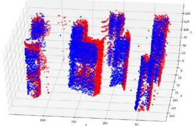
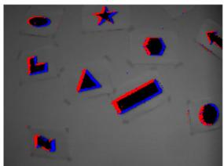
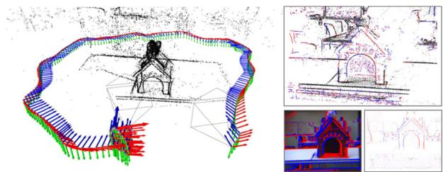
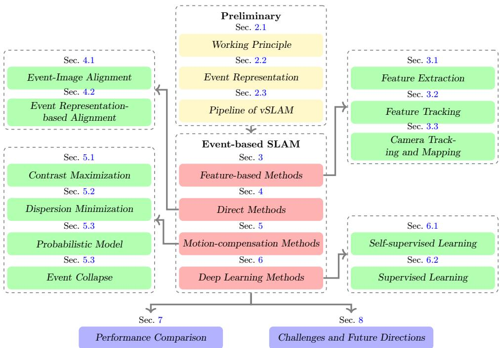
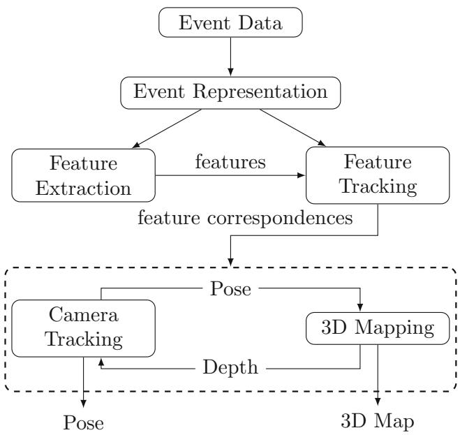
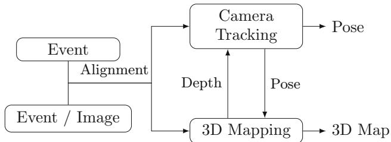
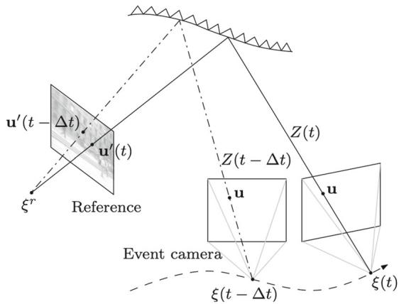
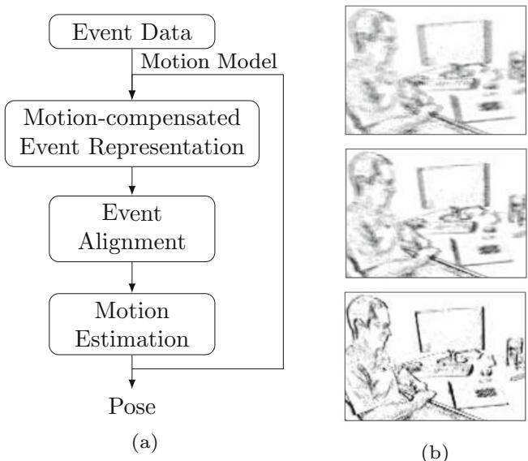

SURVEY PAPERS

Event-based Simultaneous Localization and Mapping: A Comprehensive Survey
Kunping Huang1 Sen Zhang1 Jing Zhang1 Dacheng Tao1
Received: 20 February 2024 / Accepted: 5 April 2026 / Published online: 25 April 2026
© The Author(s) 2026
Abstract
In recent decades, visual simultaneous localization and mapping (vSLAM) has gained significant interest in both academia and industry. It estimates camera motion and reconstructs the environment concurrently using visual sensors on a moving robot. However, conventional cameras are limited by hardware, including motion blur and low dynamic range, which can negatively impact performance in challenging scenarios like high-speed motion and high dynamic range illumination. Recent studies have demonstrated that event cameras, a new type of bio-inspired visual sensor, offer advantages such as high temporal resolution, dynamic range, low power consumption, and low latency. This paper presents a timely and comprehensive review of eventbased vSLAM algorithms that exploit the benefits of asynchronous and irregular event streams for localization and mapping tasks. The review covers the working principle of event cameras and various event representations for preprocessing event data. It also categorizes event-based vSLAM methods into four main categories: feature-based, direct, motion-compensation, and deep learning methods, with detailed discussions and practical guidance for each approach. Furthermore, the paper evaluates the state-of-the-art methods on various benchmarks, highlighting current challenges and future opportunities in this emerging research area. A public repository will be maintained to keep track of the rapid developments in this field at https://github. com/kun150kun/ESLAM-survey
Keywords Event camera · Visual SLAM · Visual odometry · 3D reconstruction · Deep learning
1 Introduction
Visual simultaneous localization and mapping (vSLAM), which concurrently estimates robot localization and reconstructs a 3D map of the surrounding environment using onboard visual sensors, has become an essential component for various applications (Cadena et al., 2016; Macario Barros et al., 2022; Zhang & Tao, 2021), including autonomous driving, robot navigation, and augmented reality. For instance, to navigate to designated positions and accomplish various tasks, robots require information on the environment and their internal states, which can be provided by vSLAM algorithms. Despite the benefits of vSLAM, most algorithms rely on conventional frame-based cameras that capture fullbrightness intensity images within a short exposure time at a fixed frequency. However, frame-based cameras suffer from several drawbacks. First, they acquire intensity images within an exposure time window, which can result in blurred images due to a sharp brightness change when either the camera or the objects in the scene are moving rapidly. Moreover, a long exposure time window in a night scene to capture more light will also lead to blurry images caused by the moving camera or objects as shown in Liu et al. (2015), Chen et al. (2021), Liu et al. (2021). Consequently, current vSLAM algorithms tend to lose camera tracking when they receive these lowquality blurry images. Second, frame-based cameras cannot capture accurate and informative intensity information under extreme brightness or darkness in the environment due to their low dynamic range, leading to vSLAM system failures in illumination-challenging environments. Third, the framebased camera obtains static appearance-based features at a fixed rate, which requires an additional frame interpolation step to track temporal dynamics (Deniz et al., 2023) for moving objects .

(a) Raw event data in spatio-temporal space

the (b) Event data on the image plane

(c) Event-based vSLAM system (Hidalgo-Carrio et al., 2022)
Fig. 1 Figure (a) and (b) are raw event data in the spatio-temporal space and projected on the image plane, respectively with pseduo-colored red-blue points, according to event polarity. Figure (c), adapted from Hidalgo-Carrio et al. (2022), shows the camera trajectory and 3D depth map
In recent years, event camera, a bio-inspired sensor, has attracted extensive research interest for its potential to overcome the intrinsic problems of frame-based cameras for vSLAM tasks in challenging environments characterized by high-speed motion and high dynamic range (HDR) lighting conditions. Unlike conventional frame-based cameras, the event camera operates in a fundamentally different way. It records brightness change (called event) at each independent pixel and outputs event data asynchronously (Fig. 1a). Compared to frame-based cameras, event cameras provide four favorable advantages (Gallego et al., 2022): 1) event cameras have a high temporal resolution, enabling them to monitor intensity changes and output events in microseconds, facilitating their adaptation to high-speed motion without the issue of motion blur and tracking temporal dynamics cues (Deniz et al., 2023) for the moving object contours and textures; 2) since each pixel operates independently and event data is transmitted immediately upon the occurrence of a sufficient change, event cameras have very low latency, which allows vSLAM algorithms to process event data in continuous time and track robot states continuously to estimate smooth camera motion; 3) event cameras consume less power than most frame-based cameras (Gallego et al., 2022; Amir et al., 2017; Zuo et al., 2022; Weikersdorfer et al., 2014) due to their lowredundancy data transmission and processing, making them suitable for resource-limited systems; and 4) the logarithmic scale of brightness change captured by event cameras allows for a remarkably higher dynamic range (> 120 dB) compared to conventional frame-based cameras (< 60 dB), enabling them to be applicable from day to night.
Despite their promising properties in challenging environments, event cameras cannot be directly applied to the existing frame-based vSLAM algorithms that rely on processing 2D dense brightness intensity images (Forster et al., 2014; Mur-Artal & Tardós, 2017; Engel et al., 2018). This is because the event data, which represents the brightness change at each pixel, is time-continuous, sparse, asynchronous, and irregular. Moreover, conventional frame-based vSLAM algorithms utilize intensity information for data association and construct multi-view geometric relationships to jointly estimate camera poses and environmental structures. However, events only convey limited information and contain inherent noise, making it difficult to establish correspondences on events triggered by the same landmark point. In addition, the asynchronous nature of event data, which is usually obtained from different viewpoints at different timestamps, leads to more complex geometric relationships than those utilized in conventional vSLAM systems. Therefore, new systems for processing the event data need to be developed to fully realize the advantages of event cameras in vSLAM tasks.
In recent years, many event-based vSLAM systems (Fig. 1c) have been proposed, which can be categorized into four main types based on their methodologies: feature-based methods, direct methods, motion-compensation methods, and deep learning methods. An overview of the objective functions and characteristics of these methods is introduced in Tab. 1. Feature-based methods extract features from event data (Li et al., 2019; Rebecq et al., 2017b) and establish explicit data association between incoming event data and the extracted features. These methods are able to estimate camera poses and the corresponding 3D feature points simultaneously. Differing from the frame-based direct methods (Forster et al., 2014; Engel et al., 2018) which construct implicit data association using brightness information, event-based direct methods accumulate event data on the image plane (Fig. 1b), e.g., edge map (Rebecq et al., 2017a), and establish data association based on the intensities of the image-alike event representations. Besides, some other event-based direct methods (Kim et al., 2016) leverage photometric relationships between brightness changes and absolute brightness intensity to associate events with the corresponding pixels in the reference image. Motioncompensation methods (Gallego et al., 2018) recover the motion model by warping and aligning the event data into an image plane based on their spatio-temporal relationships. Finally, deep learning methods utilize deep neural networks, such as Convolutional Neural Networks (CNNs) and Spiking Neural Networks (SNNs), to process event data and directly predict camera motion and depth.
Fig. 2 The structure of the event-based vSLAM algorithms and the taxonomy of the existing works

Table 1 An overview of four types of event-based vSLAM algorithms. the loss function of feature-based methods, the i th feature in frame m, the feature correspondence set, the pixel position of feature : the reprojected pixel position of feature at frame m; the loss function of event-image alignment methods, is a set of event data, the pixel position of event the polarity of event the contrast threshold, the intensity value of reference frame at the reprojected pixel position x from frame at time the loss function of event representation align-
ment methods, the 2D frame-based event representation, the reprojected event representation of to frame m; the loss function of motion-compensation methods, the motioncompensated event representation of a set of event the event alignment measurement function ofthe image sharpness and dispersion; the loss function of unsupervised learning methods, the warped event representation from frame m with optical flow U; the loss function of supervised learning methods, T: the transformation of the camera pose, D: the depth map, and the ground truth of T and
| Algorithms | Objective Function | Data Association? | Ref. Frame |
| Feature-based Method | $\begin{array} { r } { \mathcal { L } _ { f e a t } = \sum _ { ( f _ { m , i } , f _ { n , j } ) \in \mathcal { F } } \| \pmb { x } _ { f _ { m , i } } - \pmb { x } _ { f _ { n , j } } ^ { m } \| ^ { 2 } } \end{array}\begin{array} { r } { \mathcal { L } _ { E I A } = \sum _ { ( \pmb { x } _ { k } , t _ { k } , p _ { k } ) \in \mathcal { E } } \left\| p _ { k } C - \left( I _ { t _ { k } } ^ { r e f } ( \pmb { x } _ { k } ) - I _ { t _ { k } - \Delta t _ { k } } ^ { r e f } ( \pmb { x } _ { k } ) \right) \right\| } \end{array}$ $\mathcal { L } _ { E R A } = \| H _ { m } - H _ { m + 1 } ^ { m } \|\mathcal { L } _ { M C } = g _ { a } ( H _ { m c } ( \mathcal { E } ) )\mathcal { L } _ { u n s u p } = \| H _ { m } ^ { m + 1 } ( U ) - H _ { m + 1 } \| ^ { 2 * }$ $\mathcal { L } _ { s u p } = \Vert T - T _ { g t } \Vert ^ { 2 } + \alpha \Vert D - D _ { g t } \Vert ^ { 2 }$ | x | x |
*One example objective function of the unsupervised learning method
In this paper, we provide a comprehensive review of eventbased vSLAM techniques, as illustrated in Fig. 2, covering three primary problems: 1) how to establish event data correspondences explicitly or implicitly, 2) how to obtain accurate camera poses with event data correspondences, and 3) how to build a 3D map from event data. We begin by providing an overview of the general working principle of the event camera, the common event representations, and the general pipeline of event-based vSLAM. Next, we comprehensively review the event-based vSLAM techniques in the aforementioned four main categories and discuss their advantages and disadvantages. A full list of event-based vSLAM algorithms is summarized in Tab. 3, and we also refer readers to two actively updating online sources12 to keep track of recent advances in event-based vSLAM methods. We also provide empirical performance evaluation of state-of-the-art (SOTA) event-based vSLAM systems on commonly used datasets and benchmarks. Finally, we discuss the current challenges and suggest some promising directions for future research.
Several survey papers have been published regarding vSLAM algorithms. For instance, Cadena et al. (2016) proposed a standard structure for vSLAM algorithms and discuss various advanced topics in vSLAM such as robustness, scalability, map representation, and theoretical tools. Macario Barros et al. (2022) provided a comprehensive review of vSLAM, visual-inertial SLAM, and RGB-D vSLAM algorithms. However, these papers focus only on vSLAM algorithms that are designed for frame-based cameras and do not include event-based vSLAM algorithms. Recently, there are two surveys (Gallego et al., 2022; Zheng et al., 2023) related to event cameras. Gallego et al. (2022) presented a review of event cameras, event data processing, and eventbased vision tasks. However, they only provided a brief discussion on event-based vSLAM systems and lacked many up-to-date references. On the other hand, Zheng et al. (2023) emphasized deep learning-based methods in event-based vision tasks. In contrast, we focus on event-based vSLAM algorithms in this work and provide a systematic and comprehensive survey from a wider range of perspectives, including event representation, data correspondence, camera tracking and mapping algorithms, and performance evaluation.
The rest of the paper is organized as follows. We first introduce the preliminary of the event camera and vSLAM system in Sec. including the working principle of event cameras in Sec. 2.1, common event representations in Sec. 2.2 and general pipeline of event-based vSLAM system in Sec. 2.2. Four categories of event-based vSLAM algorithms are reviewed in Sec. 3, 4, 5, and 6. The performances ofSOTA SLAM algorithms on common datasets and benchmarks are reported and analyzed in Sec. 7. Finally, we discuss current challenges and promising research directions of event-based vSLAM in Sec. 8 and conclude the paper in Sec. 9.
2 Preliminary
2.1 Working Principle of Event Camera
The working principle of event cameras is fundamentally distinct from conventional frame-based cameras, which capture complete images at a fixed rate, with intensity values for each pixel. On the other hand, event cameras detect brightness changes at each independent pixel and transmit a continuous-time stream of event data, which is asynchronous and timestamped with microsecond resolution. An event can be represented as a tuple , where indicates the pixel coordinates that activated the event, tk represents the timestamp, and indicates the polarity, , the direction of the brightness change.
Event Generation Model (EGM). The event camera sensor operates by first acquiring and storing the logarithmic intensity of brightness, , at each pixel location , and then continuously monitoring this intensity value. Whenever the difference in intensity, , between the current and previously recorded values, , exceeds a specific threshold, C, known as the contrast sensitivity, an event is generated by the camera sensor and assigned to the pixel location
where is the last recorded timestamp when it triggers an event at the pixel . Subsequently, the camera sensor stores the current intensity value, , and repeats the above process to detect any changes in brightness at this pixel and generate additional events. The temporal contrast sensitivity, C, is a configurable parameter in the event camera that plays a crucial role in determining the camera’s performance. Typically, C is set to a value between 10% and 15%. A low contrast sensitivity value can lead to an excessive number of noisy events, while a high contrast sensitivity value can result in a reduced number of events generated by the camera.
Linearized EGM. Assuming a constant illumination condition, it is possible to establish a photometric relationship between the change in brightness and the absolute brightness value. Specifically, consider a small time interval, during which the change in brightness can be approximated using the information from the images as follows:
where is the spatial derivatives of the intensity over x and y coordinates on the image plane and v(u) is the image-point velocity, which is also known as optical flow in the literature. For a more detailed derivation, we refer the reader to the works by Gallego et al. (2015, 2022). According to the equation, the generation of an event is proportional to the strength of the edges and the amount of motion in the scene. Thus, the edge pattern present in the event data is dependent on the motion of the moving edges. In particular, if the motion occurs parallel to an edge, no events are generated, and the edge becomes invisible in the event data. However, if the motion happens in a different direction from the edge, the moving edge can cause a change in brightness, resulting in the generation of events.
Probabilistic EGM. The linearized EGM provides an idealized model for the generation of events. However, in a more realistic scenario, the sensor noises caused by timestamp jitter, pixel manufacturing mismatching, and non-linear circuitry effects must be considered, leading to the development of a probabilistic EGM. For instance, Gallego et al. (2015) proposed that the corresponding probability density follows a
Gaussian distribution centered at the contrast threshold C for the EGM. Wang et al. (2021) further considered isolated pixel noise and refractory period in the model. Nevertheless, the precise modeling of sensor noises for event cameras, such as predicting non-linear event camera noise statistics, remains an under-explored area and presents a promising open challenge for event-based vSLAM systems.
2.2 Event Representation
The event camera produces a stream of event data that captures the brightness changes at each pixel in continuous time. Processing this data is challenging because the raw event data are sparse in time and contain little information in each record. Filter-based approaches directly process the raw event data by aggregating sequential information, but they are computationally expensive to update the camera motion for each incoming event. To mitigate this problem, other approaches use alternative representations that aggregate event sequences and estimate the camera motion for a group of event data to balance latency and computational cost. This section reviews the typical event representations used in event-based vSLAM algorithms, which include individual event and accumulation representations such as event frame, time surface, and voxel grid, as shown in Tab. 2.
Individual Event. Individual event can be directly used in filter-based models, such as probabilistic filters (Kim et al., 2016) and SNNs (Gehrig et al., 2020), on a per-event basis. They update internal states asynchronously with each incoming event by reusing the states from past events (Kim et al., 2016; Gehrig et al., 2020) or external sources (e.g., IMU data) (Vidal et al., 2017).
Event Packet. Event packet is another type of event representation that stores a sequence of event data directly in a temporal window with size N as . Similar to the individual event, event packets retain precise information such as timestamps and polarities. Since event packets aggregate event data within temporal windows, it allows for batch operations in filter-based methods (Censi & Scaramuzza, 2014) and facilitates the search for optimal solutions in optimization methods (Alzugaray & Chli, 2019; Kueng et al., 2016). There are several variants of event packets, including local point sets (Kueng et al., 2016) and event queues (Alzugaray & Chli, 2019).
Event Frame. Event frame is a 2D representation that accumulates event information at the same pixel position, making it a compact event representation. It can be obtained by converting a stream of events into an image-like representation, and then used as input for conventional frame-based SLAM algorithms, under the assumption that the pixel positions remain constant. The grid-based representation can be
generally formulated as:
where N is the number of event data, is the image plane coordinate, is Dirac delta function to select appropriate pixel equal to x, and an attribute of event for aggregating events at the same pixel location. For example, if , the event frame counts the number of events at each pixel position, , the event frame corresponds to the brightness incremental image. There are two strategies to determine N: a sequence ofevent data can be collected during the fixed time window with constant ; or by a fixed number of events N. The fixed temporal duration strategy may contain few events due to the slow motion of the camera, while the fixed number of events strategy may lead to high latency. EVO (Rebecq et al., 2017a) transformed event data into an edge map to extract spatial edge patterns from a short temporal window of events. Each pixel value in the resulting map indicates the presence of an event at that location. Ye et al. (2020) proposed event counting to generate a 2D histogram of the number of events for each polarity resulting in two channels of event frames that can be processed by CNNs. Event polarities (Rebecq et al., 2017b) are summed to create an event frame that measures overall brightness changes over a given temporal window. In addition, brightness incremental images (Gehrig et al., 2018) improve the polarity summation event frame by timing the contrast threshold C to approximate changes in brightness.
Time Surface. Time surface (TS), also known as Surface of Active Events (SAE), is a 2D representation in which each pixel records a single time value, typically the most recent timestamp of the event that occurred at that pixel. The time surface can be represented in a set of event as follows:
where is a kernel function with respect to timestamp t. Vasco et al. (2016) first established a local SAE for each pixel, which stores the timestamps of events within a spatial patch centered around the pixel. To reduce computational and storage costs, the global SAE (Li et al., 2019) directly stores all timestamps and recovers the local SAE from the global information. To further encode temporal dynamics, the kernel function typically normalizes the timestamps and emphasizes recent events while preserving the overall temporal distribution. For example, to prevent the timestamps from going to infinity, a normalization process is applied to rescale timestamps to a range of 0, 1 , while preserving the distribution of the timestamps. The exponential decay kernel (Lagorce et al., 2017) is a typical normalization model used in vSLAM algorithms to emphasize recent events over past events. To preserve the local characteristic of timestamps, sort normalization (Alzugaray & Chli, 2018a) is applied in the local SAE to obtain relative temporal information. Manderscheid et al. (2019) proposed the speed invariant time surface to increase computational efficiency and improve the robustness of edge patterns. TS usually degenerates in slow-motion sequences or low-light environments, since the event timestamp becomes ambiguous or noisy. To improve the robustness of TS against noise, Ye et al. (2020) proposed using the average timestamp ofevents at each pixel. However, averaging can introduce ambiguity in the timestamp values. To alleviate this issue, Alzugaray and Chli (2018b) stored the first event timestamp when a moving edge is detected and filters out subsequent events. This is based on the observation that a single edge often triggers a group of events in time sequences. This approach significantly enhances the robustness of event timing for moving edges and reduces the prevalence of redundant events and isolated noises.
Table 2 A summary of event representations. the pixel position of even the timestamp of event k, the polarity of event is a set of event data, : the 2D event representation, the Dirac delta function to select appropriate pixel occuring at the pixel position an attribute of event for aggregating events at
the same location in the event representation, the kernel function of the timestamp, the motion corrected event coordinate of event the 3D event representation, ti : the i-th discretized timestamp bin, κ: a sampling kernel, Dim: the dimension of event representation, Time: the preservation of temporal information.)
| Event Representation | Math Formula | Dim | Time |
| Individual Event | 1D | √ | |
| Event Packet | 1D | √ | |
| Event Frame | 2D | X | |
| Time Surface | 2D | √ | |
| Motion-compensated Event Frame | $\begin{array} { r } { H _ { m c } ( { \pmb x } ) = \sum _ { k = 1 } ^ { N } b _ { k } \delta ( { \pmb x } - { \pmb x } _ { k } ^ { \prime } ) } \end{array}\begin{array} { r } { V ( x , y , t _ { i } ) = \sum _ { e _ { k } \in \mathcal { E } } b _ { k } \kappa ( x - x _ { k } , y - y _ { k } , t _ { i } - t _ { k } ) } \end{array}$ | 3D | √ |
Motion-compensated Event Frame. Similar to framebased cameras, motion blur can also occur in accumulationbased representations of event data. To address this issue, a motion-compensated event frame, known as an image of warped events (IWE), can be used. It warps the event data to an image plane using a specified motion model, ensuring the correct spatial edge patterns over a long temporal window. The motion compensated event frame is parameterized over a set of event data as follows:
where is the motion corrected event coordinate of event data is Dirac delta function to select appropriate pixel equal to x and is an attribute of event for aggregating events at the same pixel location. For example, if , it counts the number of events at each pixel position, if , it sums the polarities of events. Different from the event frame in Eq.4, the motion-compensated event frame first warp the event data with motion model ( ) as follows:
where θ is the motion model parameter. For instance, visualinertial odometry (VIO) methods Rebecq et al. (2017b); Guan et al. (2023) leveraged external information such as IMU data to estimate camera motion and reproject the event data to reference timestamps accordingly as:
where π is the camera projection model, is the depth ofthe event data and is the relative tranformation from camera pose of the event data to the image plane at time Since motion-compensated event frames are sensitive to the accuracy of the motion model, motion-compensated methods are able to obtain optimal camera motions by maximizing the event alignment at reference timestamps. Moreover, there also exist motion-compensated versions of point set (Zhu et al., 2017a, b) and time surface (Guan et al., 2023). These methods applied a motion model on event data to generate motion-compensated event streams, which are then aggregated as a point set or time surface based on motion-corrected pixel coordinates.
Voxel Grid. Voxel grid encodes event data into a fixedsize 3D space-time tensor representation, in which each voxel denotes a particular pixel and a discrete time interval. During a short time duration , a set of event data is distributed into B discretized bins The voxel grid accumulates event data information on a voxel or spreads among its closest voxels using a sampling kernel κ, which can be formulated as follows:
Table3Asummaryofexistingevent-basedvSLAMmethods.(Opt:Optimization,DL:DeepLearning,MC:Motion-compensated,Rot:Rotational,E:EventCamera,F:Frame-basedCamera,D: DepthSensor,I:InertialSensor,R:RadarS:Stereo)
| Reference | Method | Type | Event Representation | Motion | Scene | Sensor | Real-Time | Remarks |
| Cook et al. (2011) | Opt | Event Frame | Rot | Natural | E | x | Interacting network | |
| Weikersdorfer and Conradt (2012) | Filter | Feature | Individual Event | Planar | 2D B&W | E | √ | First filter-based VO |
| Weikersdorfer et al. (2013) | Filter | Feature | Individual Event | Planar | 2D B&W | E | √ | Planar probabilistic map |
| Mueggler et al. (2014) | Opt | Feature | Event Packet | 6DoF | 2D B&W | E | - | Line-based VO on known patterns |
| Kim et al. (2014) | Filter | Direct | Individual Event | Rot | Natural | E | √ | Two interleaved filters |
| Censi and Scaramuzza (2014) | Filter | Direct | Event Packet | 6DoF | B&W | E+F+D | Filter-based VO based on image gradient | |
| Weikersdorfer et al. (2014) | Filter | Feature | Individual Event | 6DoF | Natural | E+D | √ | Augment with depth sensor |
| Gallego et al. (2015) | Filter | Direct | Individual Event | 6DoF | Natural | E | 1 | Asynchronous event-image alignment |
| Mueggler et al. (2015) | Opt | Feature | Event Packet | 6DoF | 2D B&W | E | x | Continuous camera trajectory |
| Yuan and Ramalingam (2016) | Opt | Feature | Event Frame | 6DoF | Natural | E+I | - | Vertical line-based VO |
| Kueng et al. (2016) | Opt | Feature | Local Point Set | 6DoF | Natural | E+F | x | Event-based feature tracking VO |
| Kim et al. (2016) | Filter | Direct | Individual Event | 6DoF | Natural | E | √ | Three interleaved filters |
| EVO (Rebecq et al., 2017a) | Opt | Direct | Edge Map | 6DoF | Natural | E | √ | Event-event geometric alignment |
| Reinbacher et al. (2017) | Opt | Feature | Event Packet | Rot | Natural | E | √ | Panoramic probabilistic map |
| Zhu et al. (2017b) | Filter | Feature | MC Event Packet | 6DoF | Natural | E+I | x | Probabilistic feature association VIO |
| Rebecq et al. (2017b) | Opt | Feature | MC Event Frame | 6DoF | Natural | E+I | √ | Joint optimization with IMU data |
| USLAM (Vidal et al., 2017) | Opt | Feature | MC Event Frame | 6DoF | Natural | E+F+I | √ | Feature tracking on events and images |
| Mueggler et al. (2018) | Opt | Feature | Event Packet | 6DoF | Natural | E+I | x | Continuous-time camera trajectory |
| Gallego et al. (2018) | Filter | Direct | Individual Event | 6DoF | Natural | E+F+D | x | Resilient sensor model |
| CMax (Gallego et al., 2018) | Opt | Motion | MC Event Frame | Rot | Natural | E | √ | Contrast maximization |
| Bryner et al. (2019) | Opt | Direct | Event Frame | 6DoF | Natural | E | x | Synchronous event-image alignment |
| Zhu et al. (2019) | Opt | Feature | MC Event Frame | 6DoF | Natural | E | x | Probabilistic feature tracking VO |
| Zhu et al. (2019) | Opt | DL | Voxel Grid | 6DoF | Natural | E | - | Voxel grid input and MC loss function |
| Ye et al. (2020) | Opt | DL | Event Frame, Time Surface | 6DoF | Natural | E | √ | Event-based SfMLearner |
| Xu et al. (2020) | Opt | Motion | MC Event Frame | Rot | Natural | E | x | Smooth Constraint |
| DMin (Nunes & Demiris, 2020, 2022) | Opt | Motion | MC Event Features | 6DoF | Natural | E+D | √ | Dispersion minimization |
| Liu et al. (2020) | Opt | Motion | MC Event Frame | Rotational | Natural | E | x | Globally optimal CMax |
| Peng et al. (2020, 2022) | Opt | Motion | MC Event Frame | Planar, Rot | Natural | E | x | Globally optimal CMax |
| Bertrand et al. (2020) | Opt | Feature | Individual Event | 6DoF | 2D B&W | E | √ | Embedded VO system |
| Hernández et al. (2020) | Filter | Feature | Individual Event | 6DoF | Natural | E | √ | Line-based VO |
| Gehrig et al. (2020) | Opt | DL | Individual Event | Rot | Natural | E | x | Shallow SNN |
| IDOL (Gentil et al., 2020) | Opt | Feature | Event Packet | 6DoF | Natural | E+I | x | Gaussian pre-integrated measurement |
| Jung and Park (2020) | Filter | Feature | Event Packet | 6DoF | Natural | E+F+I | √ | Fusion of event, image and inertia data |
| ST-PPP (Gu et al., 2021) | Opt | Motion | MC Event Frame | Rot, Planar | Natural | E | √ | MC probabilistic model |
| Kim and Kim (2021) | Opt | Motion | MC Event Frame | Rot | Natural | E | √ | Global MC event alignment |
| Liu et al. (2021) | Opt | Feature | Event Packet | Rot | Natural | E | - | Spatio-temporal consistency |
| ESVO (Zhou et al., 2021) | Opt | Direct | Time Surface | 6DoF | Natural | SE | √ | First stereo VO |
| Hadviger et al. (2021) | Opt | Feature | Time Surface | 6DoF | Natural | SE | √ | Stereo feature matching VO |
| VCM (Wang et al., 2022b) | Opt | Motion | Event Packet | Planar | Natural | E | √ | CMax in 3D space |
| Chamorro et al. (2022) | Filter | Feature | Individual Event | 6DoF | Natural | E | √ | Line-based VO |
| Zuo et al. (2022) | Opt | Direct | Time Surface | 6DoF | Natural | E+D | √ | Augment depth sensor in mapping |
| Liu et al. (2022) | Opt | Feature | Individual Event | 6DoF | Natural | E | x | Continuous-time incremental SfM |
| EDS (Hidalgo-Carrio et al., 2022) | Opt | Direct | Event Frame | 6DoF | Natural | E+F | x | Synchronous event-image alignment |
| Mahlknecht et al. (2022) | Filter | Feature | Event Frame | 6DoF | Natural | E+F+I | x | Robust event-based xVIO |
| EIO (Guan & Lu, 2022) | Opt | Feature | Time Surface | 6DoF | Natural | E+I | √ | First VO with loop closure |
| Dai et al. (2022) | Opt | Feature | Time Surface | 6DoF | Natural | E+I | x | Continuous form of preintegration |
| PL-EVIO (Guan et al., 2023) | Opt | Feature | MC Time Surface | 6DoF | Natural | E+F+I | √ | Point and line features tracking VIO |
| Chen et al. (2023a) | Opt | Direct | Time Surface | 6DoF | Natural | SE+I | √ | Integrate stereo VO with IMU data |
| Wang and Gammell (2023) | Opt | Feature | Time Surface, Event Frame | 6DoF | Natural | SE | x | Continuous-time trajectory |
| Chen et al. (2023b) | Opt | Feature | MC Event Packet | 6DoF | Natural | SE+SF+I | - | Graph-based optimization SEVIO |
| Chamorro et al. (2023) | Filter | Feature | Individual Event | 6DoF | Natural | E+I | √ | Line-based VIO |
| Safa et al. (2023) | Opt | DL | Event Packet | 6DoF | Natural | E+R | Event and Radar SLAM using SNN | |
| Pellerito et al. (2023) | Opt | DL | Voxel Grid | 6DoF | Natural | E+F | 一 | Patch-based Event and Frame DL method |
| Guo and Gallego (2024a) | Opt | Motion | MC Event Frame | Rot | Natural | E | x | Rotational BA using CMax |
| Klenk et al. (2024) | Opt | DL | Voxel Grid | 6DoF | Natural | E | Patch-based DL method | |
| Guan et al. (2024) | Opt | DL | Voxel Grid | 6DoF | Natural | E+I | 一 | Patch-based Event and IMU DL method |
| Soliman et al. (2024) | Opt | Feature | Voxel Grid | 6DoF | Natural | SE+SF | √ | DL feature extraction |
| Wang et al. (2024b, c) | Opt | Feature | Time Surface | 6DoF | Natural | E+I | x | Gaussian process preintegration |
| Li et al. (2024) | Opt | Feature | Event Frame | 6DoF | Natural | E+I | x | Gaussian process optimization |
| Zuo et al. (2024) | Opt | Direct | Time Surface | 6DoF | Natural | E+F/D | - | A 3D map from depth or image sensor |
| Ghosh et al. (2024) | Opt | Direct | Event Frame | 6DoF | Natural | SE | √ | EVO with stereo mapping fusion |
| Qu et al. (2024) | Opt | DL | Event Packet | 6DoF | Natural | E+F+D | - | Event-RGBD neural SLAM |
| Guan et al. (2024) | Opt | DL | Time Surface, Event Frame | 6DoF | Natural | E+F+I | √ | A dense event and frame-based EVIO |
| Lee et al. (2024) | Filter | Feature | Event Frame | 6DoF | Natural | E+F+I | 8DoF warping model for feature tracking | |
| Tang et al. (2024) | Filter | Feature | Time Surface | 6DoF | Natural | E+I | √ | Filter-based event VIO |
| Xing et al. (2024) | Opt | Feature | MC Event Frame | Rot | Natural | E | √ | Event spherical rotational VO |
| Niu et al. (2024, 2025) | Opt | Direct | Time Surface | 6DoF | Natural | SE+I | x | Temporal and static stereo fusion |
| Wang et al. (2025) | Filter | Direct | Time Surface | 6DoF | Natural | SE+I | x | Stereo event-based VIO |
where is an attribute of event for aggregating events at the same location. For example, is the event polarity and counts the number of events. Isfahani et al. (2021) presented a simple and straightforward event stacking method, which merges and stacks event data in a voxel by summing the polarities. Two stacking strategies are presented: 1) the stacking based on time strategy, which divides the time duration into equal-scale portions and sums the polarities within each time interval, and 2) the stacking based on the number of events strategy, which stacks the same amount of event data each time and sums the polarities accordingly. In order to improve temporal resolution beyond the number of bins, the discretized event volume (DEV) (Zhu et al., 2019) utilizes a linearly weighted accumulation of the polarities of all neighborhoods at each voxel. Event spike tensors (Gehrig et al., 2019) extend the DEV approach by allowing for varying kernel types and polarity operating functions. To preserve the precise polarity and temporal information from event data, a 4D event queue tensor (Tulyakov et al., 2019) is proposed, which stores the polarities and timestamps of the latest k events at each pixel.
Reconstructed Image. Reconstructed images usually refer to brightness images that are obtained by merging an initial brightness image with incremental changes in brightness provided by the event data. For instance, Kim et al. (2014) and Kim et al. (2016) used a pixel-wise extended Kalman filter (EKF) to estimate the intensity gradients at each pixel, which are then integrated using Poisson reconstruction to recover the absolute intensities of brightness. In contrast, deep learning approaches (Rebecq et al., 2021; Isfahani et al., 2021) converted raw event data to voxel grids and reconstruct the brightness images via supervised training. While the reconstructed images can restore the brightness information in HDR conditions and reduce motion blur, they may lack essential textures for vSLAM algorithms since event data only responds to the motion of scene edges.
2.3 General Pipeline of Event-based vSLAM
Most event-based vSLAM systems follow the pipeline of the PTAM (Klein & Murray, 2007), which consists of three main components: 1) initialization, 2) camera tracking, and 3) mapping. In initialization, an initial map and camera poses are roughly estimated, after which camera tracking and mapping iteratively estimate the camera poses and reconstruct the 3D scene map. Alternatively, other approaches (e.g., (Liu et al., 2022)) perform the tracking and mapping steps simultaneously by optimizing the camera poses and 3D feature positions jointly. Parallel optimization is advantageous in terms of computational efficiency, whereas joint optimization helps to prevent the accumulation of drift errors in the two threads.
Tracking. The camera tracking module estimates the camera poses with respect to the current reconstructed 3D map. The camera tracking module first constructs the 2D-3D data correspondences explicitly or implicitly. Then, the camera poses that best bit the data correspondences are estimated by optimizing the reprojection errors between 2D pixels and reprojected 3D points.
Mapping. The mapping module aims to reconstruct the 3D structure of the environment. The corresponding 2D pixels from different camera views are triangulated to estimate the 3D point. Usually, the depth value from the reference frame is estimated, which reduces the dimension of the 3D point space. Moreover, since the size of the object occupies one pixel is relative to the distance from the object to the camera, the inverse depth (Rebecq et al., 2017a) and log depth representation (Hidalgo-Carrio et al., 2020) are often chosen to achieve high-granularity with small depth and lowgranularity with large depth.
2.3.1 Mapping Representation
The event-based vSLAM algorithms usually reconstruct the semi-dense structure (e.g., points and lines) captured in sparse event data. Therefore, the point-based and linebased map representations are widely adopted in event-based vSLAM methods, including voxel grid, depth map, and 3D lines.
Voxel Grid. Voxel grid discretizes the 3D volume into a finite set of voxels, which represents the existence of 3D points. Weikersdorfer et al. (2014) modeled the event-based 3D map as a probabilistic sparse voxel grid, whose value indicates the probability of a 3D point in that voxel. The projective discrete voxel grid (Rebecq et al., 2018), which is defined by the event camera pixels and the depth planes, conforms to the projective camera model, since each pixel collects lights from a fixed and small angle.
Depth Map. Depth map estimates the depth pixel-wise in the reference frame, whose value represents the depth in the corresponding pixel from the reference camera view. Filterbased methods (Kueng et al., 2016; Kim et al., 2016) include an additional parameter, variance, to measure the uncertainty of the predicted depth value.
3D Lines. Contrast to the point-based map representation, 3D lines map represents the edges to which the event camera naturally responds. Gentil et al. (2020) utilized the two end-points to parameterize the corresponding 3D lines. Chamorro et al. (2022) refined this parameterization with an origin point and a unit direction vector to simplify the computation. However, this parameterization is not unique, as the same line can be represented by different points in the line. To address this issue, the Plucker line coordinate parameterizes the 3D lines with a normal vector of the plane determined by the line direction and the origin point, and the line direction.
Map Density. The mapping module will finally reconstruct a sparse, semi-dense or dense 3D map. Generally, event-based vSLAM methods consider the 3D map from all the event data as a semi-dense scene map (Rebecq et al., 2017a), while a few methods (Kueng et al., 2016; Guan et al., 2023) first selects a subset of events to effectively construct a 3D sparse map for the time efficiency and accuracy. Since the event data do not contain full information from 2D view of the 3D scene, the event-based vSLAM algorithms are usually unable to produce the dense 3D map. To handle this issue, deep learning-based methods leverage the generalized ability of deep learning models to recover the dense 3D scene map.
3 Feature-based Method
As shown in Fig. 3, feature-based vSLAM algorithms consist of two primary components: 1) feature extraction and tracking, and 2) camera tracking and mapping. In the feature extraction step, robust features that are invariant to various factors, including motion, noise, and illumination changes, are identified. The subsequent feature tracking step is then utilized to associate features corresponding to the same scene points. Given a set of associated features , camera tracking and mapping algorithms jointly estimate the relative camera poses and 3D landmarks X of the features by solving the following optimization problem:
where is the transformation between frame m and frame denotes the 3D landmark of corresponding features on frame m. The loss function is typically defined as the reprojection error:
where is the pixel position of on frame , and ${ \pmb x } _ { f _ { n , j } } ^ { m } = \pi ( T _ { m , n } \pi ^ { - 1 } ( { \pmb x } _ { f _ { n , j } } , d _ { { \pmb x } _ { f _ { n , j } } } ) )f _ { n , j }d _ { x _ { f _ { n , j } } }$ . In this section, we review relevant approaches in the event domain.
3.1 Feature Extraction
Feature extraction methods detect shape primitives in the event stream, including point-based and line-based features.

Fig. 3 The flow diagram describes the process of the feature-based visual odometry (VO) algorithms with pure event data
Point-based features represent specific points of interest, the intersection of event edges, while line-based features are clusters of events lying on the same straight lines.
3.1.1 Point-based Features
Point-based features, also known as corners, are defined as the intersection of two or more event edges on the image plane. In order to detect corners within the event data, Clady et al. (2015), Clady et al. (2017) employed the local plane fitting algorithm to detect the normal planes of the optical flow and label an event as a corner if it belongs to the intersection of two or more of these planes. However, this technique suffers from high computational complexity due to the multiple optimization steps involved in feature computation.
One straightforward approach is to apply frame-based corner detectors to the event representation, such as TS. For example, the eHarris method Vasco et al. (2016) binarized TS and applied the derivative filter of the Harris detector (Harris & Stephens, 1988) to classify corners. The continuous Harris event corner detector (Scheerlinck et al., 2019) proposed a local spatial convolution operation on a sequence of events to estimate image gradients with the Sobel kernel and update the Harris score incrementally for corner classification. The eFAST corner detector (Mueggler et al., 2017) utilized the FAST detector (Rosten & Drummond, 2006) to improve computational efficiency. It detects corners by searching for contiguous pixels with higher values than the rest on two concentric circles around the current event. To avoid misclassifying corners on edges, the maximum angle of the circular arc is restricted to a value less than 180◦ in this approach. To address this issue, the Arc algorithm Alzugaray and Chli (2018b) iteratively expands circular arcs from the latest event in clockwise and counterclockwise directions for corner classification. However, the detection of obtuse angles results in many false corner detections along edges. To reduce the number of false detections, the FA-Harris method Li et al. (2019) used the eHarris detector to filter out corner candidates obtained from the Arc algorithm. Glover et al. (2022) developed a variant of the TS event representation, termed the threshold-ordinal surface, designed to maintain a consistent corner score over time and a decoupled Harris algorithm to enhance the overall computational throughput. Furthermore, Sun et al. (2024) improved efficiency by introducing a memory-efficient event representation, known as the ordered surface, and implementing the Harris algorithm locally, achieving the same performance without additional computational overhead.
The Harris and FAST detectors have also been extended to different types of event representations, including the edge map (Zhu et al., 2017a, b) and motion-compensated event frame (Rebecq et al., 2017b; Vidal et al., 2017). Specifically, Zhu et al. (2017a) applied the Harris detector on the edge map, while Zhu et al. (2017b) utilized the FAST detector to extract corner candidates and selects the candidate with the highest Shi-Tomasi score within each cell as a corner. Additionally, Rebecq et al. (2017b) and Vidal et al. (2017) constructed motion-compensated event frames over a longer temporal window of event data to eliminate motion blur and then detected corners using the FAST detector.
The aforementioned hand-crafted feature extraction methods suffer from the sensitivity to motion changes of features and noise in event cameras. To overcome this limitation, learning-based methods (Manderscheid et al., 2019; Chiberre et al., 2021) have been proposed to model motion-variant corner patterns and event noises for improved corner detection stability. Manderscheid et al. (2019) introduced the speedinvariant time surface and applies a random forest to predict corners. To alleviate the need for feature annotation, Chiberre et al. (2021) trained a ConvLSTM (Shi et al., 2015) to predict image gradients from event data, with supervision from brightness images, and applies the Harris detector on the predicted gradients.
3.1.2 Line-based Features
Since event cameras inherently respond to moving edges and the environment usually contains a significant number of lines, several algorithms have been proposed to extract linebased features from event data. Among these, some works use classical line detection algorithms such as the Hough transformation and line segment detector (LSD) (Gioi et al., 2010). Other approaches exploit the spatio-temporal relationship in event data (Everding & Conradt, 2018) or leverage external IMU data to cluster events in vertical bins (Yuan & Ramalingam, 2016).
For example, Mueggler et al. (2014) utilized the Hough transformation for detecting lines in the event stream by projecting events onto the Hough space. To use a flexible threshold and leverage the neighbors’ information, the spiking Hough transformation algorithm (Bertrand et al., 2020) employs spiking neurons in the Hough space to detect line. Furthermore, Chamorro et al. (2022) extended the Hough transformation to a 3D point-based map to group event data to a set of 3D lines.
PL-VIO (Guan et al., 2023) performed line-based feature extraction by directly applying the LSD algorithm on the motion-compensated event stream. Inspired by the LSD algorithm, the event-based line segment detector (Brändli et al., 2016) computed the orientation of each event in TS by utilizing the Sobel filter and groups events with similar angles into a line support region. Similarly, Reverter Valeiras et al. (2019) computed the orientation of event data based on optical flow and assigned events with similar distances and orientations to a line cluster.
Based on the observation that a moving line with constant velocity triggers a set of events on a plane in the spatiotemporal space, Everding and Conradt (2018) applied a plane fitting algorithm to cluster events and estimate the line as the cross product of the optical flow and the plane normal. In another work, Yuan and Ramalingam (2016) aligned event data to the gravity direction of the world, and used vertical bins to cluster event data, thus enabling the extraction of vertical lines.
3.2 Feature Tracking
Given a set of features, feature tracking algorithms aim to associate each event with its corresponding features. Feature tracking algorithms usually update the parametric models of features templates, such as 2D rigid body transformation, feature motion trajectories and feature positions. Other methods leverage the descriptor matching to establish feature correspondences while deep learning methods apply DNNs to predict feature displacements.
The parametric transformation, such as the Euclidean transformation, is commonly employed to model the positions and orientations of event-based features on the image plane for feature tracking and correspondence. Feature patterns can be constructed from local patches of either predefined features (Ni et al., 2012, 2015), or Canny edge maps around the Harris corners from the image (Tedaldi et al., 2016; Kueng et al., 2016). The extracted features are then tracked with subsequent events using the iterative closest point (ICP) algorithm (Besl & McKay, 1992) under the registration transformation in Ni et al. (2012), Ni et al. (2015), Tedaldi et al. (2016), Kueng et al. (2016). However, neither (Tedaldi et al., 2016) nor (Kueng et al., 2016) account for edges strength, where all edges are indistinguishable in the binary edge map. In contrast, the EKLT tracker (Gehrig et al., 2018) estimates brightness changes as feature patterns based on the linearized EGM, where image gradients are utilized to measure the edge strength.
Feature tracking and correspondence establishment typically require modeling feature motions on the image plane. Two expectation-maximization optimization steps are introduced in Zhu et al. (2017a), Zhu et al. (2017b) to estimate the optical flow of events and the affine transformation of feature alignment. The Lucas-Kanade optical flow tracker is applied to the motion-compensated event frame in Vidal et al. (2017) and the TS in Guan et al. (2023) to track features. It should be noted that the use of optical flow implicitly assumes a linear model for feature trajectories, which can be easily violated in practice. To address this issue, continuous curve representations such as Beizer curves (Seok & Lim, 2020) and B-splines (Chui et al., 2021) have been explored for feature trajectory modeling. Contrast maximization (CMax) methods can then be used to maximize the event alignment along the curves for feature trajectory estimation.
Tracking and associating features based on their discrete positions on the image plane has also been investigated. In Alzugaray and Chli (2018b, a), a graph is constructed with nodes representing event features and edges representing feature associations for feature tracking. Proximity (Alzugaray & Chli, 2018b) and local region descriptors (Alzugaray & Chli, 2018a) are used to match new event data with corresponding graph nodes. However, tracking features based on their positions on a per-event basis can make the algorithms sensitive to event noise. To address this issue, Alzugaray and Chli (2019, 2020) proposed to discretize spatial neighborhoods of each feature into a set of candidate feature points, and update alignment scores between feature templates and multiple candidates. A candidate becomes a new corresponding feature, if it outperforms the previous feature. This process is repeated to continuously track the features. Ikura et al. (2024) proposed a tracker manager that applies HASTE tracker (Alzugaray & Chli, 2020) to sub-images while monitoring their feature tracking quality. Instead of processing the entire image, the manager tracks several small image regions, discards the bad trackers, and selects the best tracker in each image region. This approach reduces redundant feature tracking, thereby improving overall tracking efficiency. In Hu et al. (2022), events with equal polarity are grouped as a set of equal polarity cluster features based on the observation that feature patterns of different polarities create a boundary separating clusters of events. After the feature clustering, the feature tracks are estimated as the center of gravity of events in a set of temporal windows.
Instead of modeling feature motion on the image plane, feature descriptors can be used to establish feature correspondences directly. For instance, Hadviger et al. (2021) built the feature descriptor as a square window centered at the event corner in TS and establishes correspondences via cross-correlation between the feature descriptors. Meanwhile, PL-EVIO (Guan et al., 2023) utilizes lines as features and applies the band descriptor Zhang and Koch (2013) to describe and match line-based features.
Traditional feature tracking methods based on linear noise models cannot handle the non-linear noise characteristics of event cameras. In contrast, deep learning methods can implicitly model event noises and generalize well across different scenarios under the assumption that the training and test datasets exhibit only minor distribution shifts. For example, Messikommer et al. (2023) proposed a deep learning-based approach that extracts local contextual information and correlation maps for each feature and the corresponding local patch of event data with the feature pyramid network (FPN) (Lin et al., 2017) and ConvLSTM (Shi et al., 2015), and predicts the feature displacement accordingly. Moreover, it incorporates a frame attention module to aggregate the information from all features and refine the predictions. Li et al. (2024) extended feature trajectory tracking to 3D by introducing two additional modules: a patch matching module, which predicts the disparity offeature patches between stereo cameras, and a stereo motion consistency module, which enhances the trajectory prediction. To further improve robustness, the differentiable Kalman filter (Shen et al., 2024) was proposed to quantify the uncertainty of feature displacement predictions and integrate asynchronous event and image features, ensuring both reliability and high precision. While previous works focus on tracking carefully selected feature points, event-based tracking any point (TAP) methods (Hamann et al., 2024; Han et al., 2024) leveraged the global contexts in event data to track arbitrary points. In general, these methods first initialized the feature positions and descriptors in the initial frame, and iteratively updated them by computing correlation features from subsequent event data.
3.3 Camera Tracking and Mapping
Given the event data associations, most features-based vSLAM algorithms perform the tracking and mapping tasks in parallel threads. In the tracking thread, the featurebased techniques estimate the relative camera poses using a set of 3D feature positions obtained from the mapping thread, while these feature positions are used to reconstruct the 3D landmarks of features in the mapping thread in return. In this section, we present a comprehensive review of two typical types of event-based vSLAM approaches based on: 1) optimization-based vSLAM methods, 2) filterbased methods. Optimization-based methods process multiple keyframes over a temporal window during optimization, while filter-based methods process each event data asynchronously and update the current state vector using a filter.
3.3.1 Optimization-based Method.
Based on the 2D image-like event representation, conventional frame-based vSLAM algorithms can be adapted for event-based tracking and mapping. For instance, Mueggler et al. (2014) and Bertrand et al. (2020) applied the reprojection error between the reprojected line and the associated event data, and between the intersection points of lines and the corresponding 3D points, respectively, to estimate camera poses with respect to the known planar shape. Kueng et al. (2016) and Zhu et al. (2019) utilized the SVO algorithm (Forster et al., 2014) to estimate the relative camera pose by minimizing the reprojection error on a set of event-feature correspondences. In the mapping module, these methods applied depth filters to measure the depth values as a mixture of Gaussian and uniform distribution and update depth values as well as uncertainties by the features triangulation between the current location and its first detection, using the relative camera poses. Additionally, Yuan and Ramalingam (2016) derived a linear system to represent the algebraic distance of 2D to 3D vertical lines and solve the camera poses using least squares optimization.
Several works have begun exploring the relationship between event data for camera pose and depth estimation. By assuming any two events with the same time interval following the same relative rotational transformation, Liu et al. (2021) derived a spatio-temporal consistency constraint for events under rotational camera motion. To optimize the motion parameters, it iteratively searches for the closest points based on a relaxed temporal constraint and applies the trimmed ICP algorithm to enforce spatial consistency. Gao et al. (2023, 2024) analyzed the incidence relationship between event data and 3D line, and introduced a minimal 3D line representation based on a rotation matrix. Additionally, they proposed an N-point linear solver to estimate both the line representation and camera pose.
Representing each event data with discretized camera poses, often requires a large number of parameters. To address this issue, continuous-time representation of camera trajectory has been introduced as a promising solution. By representing the camera trajectory as a continuous curve, such as B-spline (Mueggler et al., 2015, 2018; Hug et al., 2024) or Gaussian process motion model (Liu et al., 2022; Gentil et al., 2020; Wang & Gammell, 2023; Wang et al., 2024a), these methods can interpolate the camera pose at any given time from the local control states and use it to obtain optimal control states. Notably, Liu et al. (2022) proposed a joint optimization method based on incremental Structure from Motion (SfM) to simultaneously update the control states and 3D landmarks. However, existing approaches that utilize continuous-time representation often suffer from high computational burden. To address this limitation, Hug et al. (2024) proposed a message-passing algorithm that significantly reduces computational load.
3.3.2 Filter-based Method.
Optimization-based vSLAM methods typically assume temporally synchronized event accumulation, disregarding the inherently asynchronous nature of event data. In contrast, filter-based methods have been introduced to process event data asynchronously. Typically, the filter’s state is defined as the current camera pose, while the motion model is the random diffusion model. The state is predicted using the motion model and then corrected using error measurement. For instance, Weikersdorfer and Conradt (2012) measured the distance between the back-projected ray of an event data and a 3D planar feature point to estimate the camera pose. Weikersdorfer et al. (2013) extended this method for mapping with an additional measurement function based on the probability of event occurrence in the planar plane. Furthermore, line-based vSLAM methods (Hernández et al., 2020; Chamorro et al., 2022) update the filter state during camera tracking by measuring the distance between an event and the reprojected line. During mapping, line-based methods use Event-Based Multi-View Stereo (EMVS) (Rebecq et al., 2018) to construct a point-based map and apply the Hough transformation to extract 3D lines, which implicitly indicate event-line associations.
3.4 Multi-sensor Method
RGB-D Sensor. Weikersdorfer et al. (2014) extended (Weikersdorfer et al., 2013) by incorporating depth information from a depth sensor to enabling 3D probabilistic map reconstruction, which requires additional event and depth correspondences.
IMU Sensor. Since events are motion-dependent, events do not contain long-term appearance, which leads to unreliable feature extraction algorithm. To address this issue, Rebecq et al. (2017b) and Vidal et al. (2017) aggregated events over a long temporal window into motioncompensated event images to preserve the long-term appearance and applied frame-based feature extraction algorithms to acquire reliable features. On the other hand, several eventbased VIO methods (Rebecq et al., 2017b; Vidal et al., 2017; Guan & Lu, 2022; Guan et al., 2023; Dai et al., 2022) employ the IMU pre-integration algorithm (Leutenegger et al., 2013; Forster et al., 2017) to incorporate event data with inertial data and apply the sliding-window optimization methods to minimize the IMU error and the reprojection error of event features. Furthermore, filter-based VIO methods (Zhu et al., 2017b; Mahlknecht et al., 2022) improve the motion model by propagating the last IMU state to the event state at the corresponding timestamp, which avoids failures in camera tracking and improves the accuracy. On the other hand, Chamorro et al. (2023) enhanced the measurement error term by integrating the IMU correction errors with the event reprojection error, leading to improved accuracy and higher computational efficiency. Moreover, the continuous-time representation (Mueggler et al., 2018; Gentil et al., 2020) can query the camera state at any timestamp, which enables the fusion of asynchronous event data and synchronous IMU data. Additionally, Gaussian regression representation (Wang et al., 2024b; Li et al., 2024; Wang et al., 2024c) enables the combination of event data with inertial data by preintegrating state estimates from latent state measurements.
Image Sensor. Since the images contain abundant static long-term features and events are ofhigh temporal resolution, Tedaldi et al. (2016), Kueng et al. (2016), Gehrig et al. (2018) proposed to extract features (e.g. the Canny edge map around Harris corner) from the last image and track these features using event data. Similarly, Messikommer et al. (2023) used both images and events as input to extract their local contextual information, and constructed correspondences between events and image features. On the other hand, Chiberre et al. (2021) utilized the image gradients from images as supervised signals and trained a ConvLSTM (Shi et al., 2015) with event as input only to predict image gradients. Afterwards, the Harris corner detector is applied on the predicted gradients. Furthermore, Soliman et al. (2024) fused pre-processed event voxel grid with image data, and employed a learningbased feature extractor and descriptor to enhance robustness in feature representation and matching.
3.5 Discussion
The accuracy of feature extraction and tracking algorithms has a significant impact on the performance of featurebased methods. Current feature extraction algorithms rely heavily on frame-based feature detection, such as Harris and Fast corner detector. However, event data poses unique challenges as its appearance is dependent on the motion, unlike intensity images. As a result, the constant appearance assumption underlying frame-based algorithms is not applicable to event data. To address this issue, some works (Kueng et al., 2016; Gehrig et al., 2018) have proposed extracting motion-invariant features from images and tracking them using event streams. Nonetheless, these methods suffer from limitations of frame-based cameras such as motion blur and low dynamic range. Learning-based methods are capable of efficiently detecting stable feature points using pure event data. However, most learning-based methods require intensity images to provide supervised signals for model training. Feature-based VIO methods, on the other hand, couple IMU data with event data to create motion-compensated event frames over a long temporal window. The long-term appearance in the motion-compensated event frames is less affected by noise and motion-variant characteristics, enabling robust feature extraction and tracking. However, this approach is deprived of the high temporal resolution of event data.

Fig. 4 The diagrams depict event-based direct methods. Direct methods attempt align events data to the corresponding events or pixels in image to estimate camera poses and 3D maps.
4 Direct Method
Unlike feature-based methods, direct methods align event data in camera tracking and mapping algorithms without explicit data association. Frame-based direct methods estimate relative camera poses and 3D positions by comparing pixel intensities between selected pixels in a source image and the corresponding reprojected pixels in the target image. However, they cannot be applied to event streams due to the asynchronous nature and brightness change information of event data. To overcome this challenge, two types of event-based direct methods have been developed (Fig. 4): event-image alignment and event representation-based alignment. Event-image alignment methods (Fig. 5) reproject event data at the same pixel location x over consecutive time intervals and t onto the reference image I. The relative camera poses from frame at time t to the reference frame and 3D points X are estimated by minimizing the discrepancy between the observed brightness change from event data and estimated brightness change from image as
where the loss function can be formulated as
where represents the pixel position of event at time represents the polarity of event is a set of event data, C is the contrast threshold, denotes the intensity value of the reprojection of the event at time into the reference frame. On the other hand, event representation-based alignment methods aggregate two subsets of event at time and , converting them into 2D image-like representations and . The relative camera poses and 3D points X are estimated by minimizing the intensity difference between the corresponding points as

Fig. 5 Computation of the contrast threshold by reprojecting events from the event camera to a reference image. Figure adapted from Gallego et al. (2018), where u is pixel position of event, is the relative transformation from frame at time t to the reference frame, and is the reprojection pixel position of u(t) from frame at time t to the reference frame
where the loss function is defined as
where represents the projection of frame to frame m. In this section, we provide a comprehensive review of these two categories of event-based direct methods.
4.1 Event-Image Alignment Method
Event-image alignment methods utilize additional visual images to ensure photometric consistency between event data and images. Based on the event generation mechanism (Eq. 1), whereby each event represents the brightness change from the last event triggered at the same pixel, several works Kim et al. (2014), Kim et al. (2016), Gallego et al. (2018) align event data with the corresponding brightness pixels to estimate camera poses and depths, as shown in Fig. 5. In direct methods, filter-based techniques are also employed to process incoming event data. For instance, Kim et al. (2014) utilized two filters to estimate camera poses and image gradients for image reconstruction under rotational camera motion. In the camera tracking module, the first filter utilizes EGM by re-projecting events to a reference image to calculate the brightness difference as the error measurement to update the camera poses. The second filter estimates the image gradient at each pixel on the reference images using the linearized EGM as the measurement model to recover the absolute brightness intensity. Furthermore, Kim et al. (2016) used an extra filter for depth estimation, which applies the same error measurement function in the camera tracking module to update the depth values in the reference frame. To enhance the robustness of filter-based methods, Gallego et al. (2018) utilized a resilient sensor model with a normaluniform mixture distribution to filter out outliers in event data. Due to the local-time estimation limitations of the filterbased method, Guo and Gallego (2024b, c) proposed an event optimization-based bundle adjustment method to simultaneously estimate camera poses and map points. This method enables global refinement, improving the overall accuracy and consistency of event-based mapping and localization.
Several approaches have been proposed to estimate camera poses and velocities using event data. Censi and Scaramuzza (2014) employed a filter to maximize the magnitude of camera velocity and image gradients, as events are more likely to occur in regions with large brightness gradients. Similarly, Gallego et al. (2015) used the linearized EGM to obtain the camera motion parameters by constructing an implicit measurement function. Although previous methods update camera poses on a per-event basis using filtering, this can be computationally expensive. To address this issue, Bryner et al. (2019) and Hidalgo-Carrio et al. (2022) processed a group of events synchronously using non-linear optimization. They convert an event stream to a brightness incremental image and align it with a reference brightness incremental image to estimate camera pose and velocity simultaneously. In the mapping module, Gallego et al. (2015); Bryner et al. (2019) assumed a given photometric 3D map consisting of intensities and depths, while Hidalgo-Carrio et al. (2022) transfered depth values from past keyframes to a new keyframe and applies photometric bundle adjustment (PBA) on keyframes to refine the camera poses and 3D structure.
4.2 Event Representation-based Alignment Method
Event-image alignment methods require additional data, such as a photometric 3D map consisting of intensities and depths, as well as brightness images, to ensure photometric consistency. Conversely, event representation-based alignment methods follow the same scheme of the frame-based direct method (Forster et al., 2014), where event data is aligned by converting it into 2D image-like representations. EVO (Rebecq et al., 2017a) presented a purely geometric method for aligning event data based on edge patterns. In the camera tracking module, it converts a sequence of events to an edge map, which is then aligned with the reference frame built from the reprojection of the 3D map. The mapping module adopts EMVS (Rebecq et al., 2018) to reconstruct a local semi-dense 3D map without explicit data associations. ES-PTAM (Ghosh et al., 2024) extends EVO method to the stereo event camera setting by incorporating an event-based stereo local map fusion algorithm Ghosh and Gallego (2022). ESVO (Zhou et al., 2021) presented a direct method on TS to exploit temporal information from event data. In the camera tracking module, it aligns the support of the semi-dense map with the most recent events in TS, as they are both involved in the scene edges. For mapping, a forward-projection method is applied to reproject each pixel in the reference TS to the stereo TS to retrieve their depths by optimizing the stereo temporal consistency, which is enhanced by a depth fusion strategy from previous depth estimation and its neighborhoods. Chen et al. (2023a) proposed a selection strategy on the support ofthe semi-dense map to remove redundant depth points and reduce the computation overhead. Since ESVO (Zhou et al., 2021) struggles to recover the accurate depth of structures that are parallel to the stereo camera baseline, Niu et al. (2024) proposed to apply the block matching algorithm to handle such event data while using the original ESVO method for the remaining event data.
4.3 Multi-sensor Method
Event-image alignment methods are the multi-sensor methods with additional images, which are discussed in Sec. 4.1. In this subsection, multi-sensor methods are introduced except event-image alignment methods.
RGB-D Sensor. Gallego et al. (2015, 2018); Bryner et al. (2019) constructed a photometric 3D map from the RGB-D sensor and estimate the camera motion with events. However, this imposes a huge computation burden for pre-processing. To alleviate this problem, DEVO (Zuo et al., 2022, 2024) augments event camera with the depth sensor to build an accurate 3D local depth map, which is less influenced by noisy events in the mapping module with respect to the eventbased 3D map.
IMU Sensor. Chen et al. (2023a); Niu et al. (2025) utilized the IMU pre-integrated algorithm (Leutenegger et al., 2013; Forster et al., 2017) to fuse the IMU data with time surface, which prevents the degeneration of ESVO (Zhou et al., 2021) when few events are generated. Additionally, Wang et al. (2025) corrected the predicted camera poses from event data using inertial data.
4.4 Discussion
Direct methods offer an alternative to feature-based methods by not relying on the accuracy of feature detection. Instead, they exploit either spatio-temporal information or the brightness relationship in event data for localization and mapping. Specifically, event-image alignment methods align events to intensity values, while event representation-based alignment methods align with edge patterns depicted in the event representation accumulation. Direct methods are well-suited for event data and demonstrate strong performance in eventbased visual odometry (VO). This is due to two key factors. Firstly, events are triggered by moving edges, which act as the pixel selection with strong image gradients on the image plane. Secondly, the high temporal resolution of event data results in a small displacement between two event frames, which is necessary for direct methods to obtain an optimal solution.

Fig. 6 The flow diagram in (a) describes motion-compensation methods in camera tracking, which estimate camera motions by iteratively maximizing event alignment in event accumulations to produce sharp edges from top to bottom in (b). Figure (b) is adapted from (Gallego et al., 2019)
5 Motion-compensation Method
Motion-compensation methods are built on event alignment, which employs the event frame as the primary event representation, and may be subject to motion blur across an extended temporal window. Motivated by this observation, motion-compensation methods aim to estimate camera motion parameters by optimizing the event alignment in the motion-compensated event frame, leading to the acquisition of sharp images, as shown in Fig. 6. In general, given a set of event packets motion-compensation methods are formulated as follows:
where represents relative transformation from event to the image plane at the reference timestamp, X is a set of 3D landmarks, is a function that measures the event alignment, and is reference frame with the reprojected point corresponding to each event . For example, the CMax method (Gallego et al., 2018) leverages the variance to measure the image sharpness, while DMin method (Nunes & Demiris, 2020) applies the entropy to evaluate the image dispersion. However, under certain circumstances, motioncompensation methods may converge towards an undesirable outcome, resulting in event collapse, where events are accumulated into a line or a point within the event frame. In this regard, we classify motion-compensation methods into three categories: 1) the contrast maximization (CMax) method, 2) the dispersion minimization (DMin) method, and 3) the probabilistic alignment method. In this section, we present an overview of representative methods in each category and discuss the event collapse phenomenon.
5.1 Contrast Maximization
The CMax framework (Gallego et al., 2018) aligns event data triggered from the same scene edges by maximizing the edge strengths in the IWE. The CMax method initially warps a sequence of events into a reference frame using candidate motion parameters, following which the contrast (i.e., variance) of the IWE is maximized to enhance the edge strengths and estimate event camera motion. In Gallego et al. (2019), various reward functions used to measure the image sharpness and dispersion of the IWE are examined, with experimental results demonstrating that functions such as variance, gradient magnitude, and Laplacian are the most effective. Kim and Kim (2021) proposed a method to reduce drift errors that accumulate with integration in the CMax framework by globally aligning events. Guo and Gallego (2024a) proposed a CMax bundle adjustment method to refine a continuous-time rotational camera trajectory over a globally aligned IWE, which acts as a panoramic map in this system. Furthermore, globally optimal CMax methods (Peng et al., 2020, 2022; Liu et al., 2020) are proposed to obtain the optimal solution by deriving the upper and lower bounds of several reward functions and applying the branch-and-bound algorithm for global optimization.
The CMax framework can not only be applied on the camera motion estimation, but also be utilized in the depth estimation task. Gallego et al. (2018) first warped events to the reference frame using candidate depth parameters, and maximized the contrast by varying the depth parameters. Furthermore, EMVS (Rebecq et al., 2018) adopts the CMax method in the 3D space to reconstruct event-based 3D map. It first constructs a discrete voxel grid, namely disparity space image (DSI), and back-projects events to 3D rays using camera poses. The ray density in each voxel is then computed as the number of ray intersections and the scene structure is recovered by maximizing the ray densities. Furthermore, the volumetric contrast maximization (VCM) method (Wang et al., 2022b) computes the volumetric ray density in each voxel as the spatial point-to-line distance between the voxel center and the 3D rays.
5.2 Dispersion Minimization
In contrast to the CMax framework, DMin methods (Nunes & Demiris, 2020, 2022) utilize the camera motion model to warp events into a feature space rather than reprojecting them into a 2D reference frame. Within the feature space, DMin methods apply entropy loss on the warped events to minimize the average events dispersion, which strengthens edge structures. The entropy loss is computed using the Potential energy and the Sharma-Mittal entropy (Gupta & Sharma, 1976), but this is more computationally expensive than CMax due to the use of a multivariate Gaussian kernel. To address this issue, DMin methods apply a truncated kernel function-based convolution to the feature vector, resulting in a linear computational complexity with the number of events. Additionally, Nunes and Demiris (2022) developed an incremental version of the DMin method that optimizes the measurement function in its spatio-temporal neighborhood for each incoming event.
5.3 Probabilistic Model
The probabilistic model method (Gu et al., 2021) aims to measure the entropy of a set of events at each pixel independently, as opposed to the DMin method using the pairwise entropy measurement. The pixelwise independence assumption leads to a simple theoretical formulation and increases the computational efficiency. To achieve this, it proposed to transfrom an event stream in to an IWE and evaluate the likelihood of event data belonging to the same scene point. The count of warped events at each pixel is modeled as a Poisson random variable and the probability of the entire warped events is formulated as a a collection of independent Poisson point process, i.e., the spatio-temporal Poisson point process (ST-PPP) model (Moller & Waagepetersen, 2003). The camera motion parameters are then estimated by maximizing the probability of the ST-PPP model. However, the hyperparameters in this model are environment-specific, requiring re-measurement upon transitioning between different scenes or event cameras.
5.4 Event Collapse
The event collapse is a common issue in motion-compensation methods, where events are mapped to a single point or line in the target space. Due to the event collapse, motioncompensation methods may converge to a local optimum with a larger value than the desired solution, as the objective function of the optimization framework is designed for scenarios where event collapse does not occur. To mitigate this issue, a simple and effective strategy is to initialize motion parameters close to the optimal solution (Gallego et al., 2018). Nunes and Demiris (2022) proposed a data preprocessing procedure (i.e., whitening events) to decorrelate data dimensions and enforce covariance constancy, which helps prevent solution degeneration. Furthermore, two metrics, namely divergence and area-based deformation, are proposed in Shiba et al. (2022). These metrics are used to quantify event collapse and design new objective functions with corresponding regularizers. However, these regularizers are computed relative to a single reference time, resulting in the undesirable issue that events further from the reference time contribute more to the regularizers than events closer. To address this problem, Shiba et al. (2023) proposed a geometric regularizer that relies on the differential deformations rather than directly on the event data.

Fig. 7 Diagrams of two typical types of deep learning methods. Selfsupervised methods estimate depth and camera pose to recover optical flow as the training signal (in orange), while supervised methods estimate the depth and camera pose with ground truth separately (in blue)
5.5 Discussion
Motion-compensation methods take the advantage of events accumulated over a long temporal window, allowing for the preservation of long-term edge patterns and more robust estimation of camera poses. Furthermore, motion-compensation methods are capable of utilizing timestamps of event data for modeling camera motions. Despite these advantages, current motion-compensation methods suffer from the event collapse in a broad range of camera motions. This issue causes the optimization process to converge to an undesired solution with a larger value than the intended one. As a result, the event collapse problem restricts motion-compensation methods in cases of rotational camera motion.
6 Deep Learning Method
In recent years, deep learning methods have demonstrated considerable potential in vSLAM algorithms (Zhou et al.,
2017; Wang et al., 2017; Yang et al., 2020; Zhang et al., 2022c; Zhao et al., 2022; Zhang et al., 2022b). However, the event camera generates asynchronous and sparse event data, making them difficult to process using conventional deep neural networks (DNNs) such as multi-layer perceptrons (MLPs), CNNs, and recurrent neural networks. To process event data, current DNNs require conversion to the eventframe based representation (Ye et al., 2020) or voxel grid (Zhu et al., 2019), while SNNs can directly process event data without any pre-processing. In this section, we present a comprehensive review of the research progress in eventbased deep learning methods, which are categorized into self-supervised and supervised learning methods (Fig. 7). Deep learning methods typically process event data with neural networks to predict the camera poses and depth, as described by:
where T represents the camera pose and D is the depth map, with and being the network parameters. Self-supervised learning methods recover optical flow U from predicted camera poses and depth, and minimize the optical flow loss:
where represents the event representation of frame m, and is the warped event representation from with optical flow U. On the other hand, supervised learning methods minimize the pose and depth losses by comparing the predicted camera poses T and depth D with the ground truth values and as follows:
where α is a hyperparameter controlling the relative importance of the depth loss. The deep learning models are trained by minimizing the total loss:
Once trained, the camera poses and depth can be predicted based on Eq. 16 for unseen event data.
6.1 Self-supervised Learning Method
Self-supervised learning methods do not require access to ground truth camera poses and depth values during training. Instead, they rely on supervisory signals derived from temporal dynamics information, such as photometric consistency, by back-warping adjacent frames using depth and pose predictions from the DNNs under the multi-view geometric constraint. Fig. 7 illustrates a typical self-supervised framework (Zhou et al., 2017). In Ye et al. (2020), event data is first converted into event frames which are fed into the evenly-cascaded convolutional network that evenly resizes the features to deal with the sparsity, to predict the camera motion and depth. Then, events in consecutive neighboring frames are back-warped to the middle frame to construct the error measurement for camera motion and depth estimation. Zhu et al. (2019) adopted an U-Net-like structure and improves upon (Ye et al., 2020) in two aspects, namely, the event representation and the loss function. First, it proposes the DEV by interpolating event data in a discrete 3D spatio-temporal space, followed by two shared-weights depth networks to predict the disparities from a stereo input pair and a pose network to predict the camera pose. Inspired by the CMax framework, the optical flow is estimated from the camera pose and depth to warp the event into the reference frame and leverage the contrast ofthe event frame as the training signal. Additionally, a stereo disparity loss, a left-right consistency loss, and a local smoothness regularizer are used to ensure the consistency of context information between the left and right event volume given the predicted disparities, enforce disparity consistency, and enhance the smoothness of the disparity, respectively.
6.2 Supervised Learning Method
Supervised learning methods aim to minimize the errors between predicted poses and depths with their ground truth. In Nguyen et al. (2019), camera poses are regressed from sequences of event data by utilizing a CNN to extract features from the event frame, followed by the combination of the current information with motion history using a stacked spatial LSTM. Nonetheless, standard CNNs are limited to processing accumulated events, which leading to the same latency as frame-based methods. To mitigates this limitation, EventNet (Sekikawa et al., 2019) treats event data as the point cloud and adopts a variant of PointNet (Charles et al., 2017) with an recursive processing module to handle the event data asynchronously. Klenk et al. (2024) proposed a patch selector to sample highly relevant event patches for tracking. The method iteratively predicts optical flow using an update operator and refines the camera pose and depth through a differentiable bundle adjustment layer.
To leverage the temporal information, E2Depth (Hidalgo-Carrio et al., 2020) introduces a U-Net architecture with ConvLSTM to predict dense monocular depth from a continuous stream of event data. It first encodes the DEV into a compact representation, which is subsequently fed into the ConvLSTM model to predict a normalized logarithmic depth map. The network is optimized by minimizing both the scale-invariant loss and multi-scale scale-invariant gradient matching loss, which promote smooth depth changes and enforce depth discontinuities. However, the ConvLSTM model is likely to lose the long-term dependency between events. To address this issus, Hamaguchi et al. (2023) proposed a novel hierachical neural memory network to encode the local and dynamic information quickly at low-level memory and memorize the global information from a history of events at high-level memory. Liu et al. (2022) proposed an event-based recurrent transformers with a spatial fusion module, which effectively captures global context information, and a recurrent unit, which leverages rich temporal cues from continuous event streams. Meng et al. (2024) generated multiple IWEs with different depth hypotheses, learned the trend offocus effect among these hypotheses, and predicted a dense depth map.
The standard DNN models are restricted to process imagelike data at a fixed rate and can only predict a camera pose for a group of event data in each event accumulation. The SNN (Gehrig et al., 2020; Wu et al., 2022) can directly process each event data without any preprocessing procedure and perform continuous-time camera pose regression through the spikegeneration mechanism. The SNN processes an event, referred to as a spike, at a time and updates the states in the input layer. Ifthe state value in current layer exceeds a pre-defined threshold, a new spike is generated and passed to the next layer. Since the spike-generation mechanism is non-differentiable and an additional temporal dimension is considered, the training process of SNN is extremely difficult. To mitigate this issue, different training paradigms are developed, including conversion from shadow ANNs to SNNs (Esser et al., 2015; Diehl et al., 2015, 2016), surrogate gradients (Shrestha & Orchard, 2018) and spike-timing-dependent plasticity (Safa et al., 2023).
6.3 Multi-sensor Method
Image Sensor. First of all, several methods (Gehrig et al., 2021; Zhang et al., 2022) extract features from both event data and images to enhance the performance ofvSLAM tasks. Liu et al. (2024) proposed a complementary visual representation learning method to discretize multi-scale features and fuse features from these two modalities at pattern level instead ofpixel level to better aggregate local spatial contexts. The recurrent asynchronous multi-modal (RAM) approach (Gehrig et al., 2021) proposes a multi-modal model that integrates event data and images by asynchronously updating the internal state of an ConvGRU (Siam et al., 2017). Pellerito et al. (2023) extended to recurrent, asynchronous, and massively parallel (RAMP) encoders, which encodes each pixel independently in a parallel manner to effectively fuse asynchronous data streams. On the other hand, Zhang et al. (2022) built the features association between event data and images in stereo setting with different levels of features extracted from the FPN.
Secondly, self-supervised depth estimation with supervised signals constructed from images has also been investigated in Chaney et al. (2019), which predicts the ratio between the height above the ground plane and the depth in the camera frame. The depth and height are then extracted from this ratio using a given ground plane transformation. During training, it estimates the optical flow with the predicted height-to-depth ratio and establish photometric losses between two consecutive images. Meanwhile, Zhu et al. (2023) predicted the multi-scale dense depth maps from event data with a U-Net-based Depth-Net. During training phase, the depth maps are incorporated with the predicted pose from two adjacent image frames and one image frame to reconstruct the other adjacent image frame, thereby updating the network.
Thirdly, event-based models often learn the edge features while frame-based models can capture the detailed structural information. To leverage the merit of frame-based model, Wang et al. (2021a) proposed a dual transfer learning method: 1) a shared-weights encoder between event end-task learning and event-to-image translation, which is capable to capture the visual structural information; and 2) a feature-level and label-level prediction transfer learning module to further enhance the event end-task learning.
Last but not least, Mixed-EF2DNet (Shi et al., 2023) fuse a event-based voxel grid list with the predicted optical flow from frame-based pre-trained RAFT (Teed & Deng, 2020) to fuse a long temporal windows of event data. Then, the voxel grid list and flow features are fed into the depth network to predict contextual depth maps. Finally, the depth map of central voxel grid is estimated by the weighted contextual depth maps to enhance the robustness.
IMU Sensor. Guan et al. (2024) re-designed the differentiable bundle adjustment layer to incorporate both event data and IMU data through a factor graph including factors for event reprojection error and IMU pre-integration.
6.4 Discussion
Deep learning methods have the capability to capture the non-linear characteristics of event camera, handle noises and outliers, and establish the complex mapping between event data and robot states. However, the effectiveness of these methods relies heavily on having a large amount of training data, and they provide no guarantees of optimality or generality in different environments. SNNs, a special type of DNNs, are well-suited for event-based vSLAM algorithms due to their ability to directly process asynchronous, irregular event data at extremely low power consumption. However, there are several drawbacks to SNNs, such as the spike vanishing problem in deep layers and the notoriously difficult training process, hindering their generalization to a stacked hierarchical model.
7 Performance Comparison
This section presents the performance comparison of various typical event-based vSLAM algorithms in terms of camera pose and depth estimation. Evaluation of vSLAM algorithms can be conducted qualitatively by subjective visual comparisons and quantitatively using objective metrics. First, we introduce commonly used datasets in SOTA VO systems and some recently proposed datasets, as well as metrics for measuring the performance of camera pose and depth estimation. We then provide a comprehensive evaluation of several vSLAM tasks, including depth estimation, ego-motion estimation, and VO, by collecting and analyzing results from existing studies.
7.1 Experiment Setting
7.1.1 Dataset
One early dataset (Mueggler et al., 2017) provides several sequences of a hand-held event camera capturing an indoor environment, with ground truth camera poses captured by a motion-capture system. Another dataset, the rpg dataset (Zhou et al., 2018), uses hand-held stereo event cameras to record an indoor environment. However, both these datasets are limited to low-speed camera motion in small-scale indoor environments. The MVSEC dataset (Zhu et al., 2018) is the first large-scale stereo event camera dataset that leverages a hexacopter to capture more complex scenarios in both indoor and outdoor environments and a driving car to record outdoor day and night scenarios. On the other hand, the vicon dataset (Guan et al., 2023) includes two event cameras with different resolutions that are used to record HDR scenarios with very low illumination, strong illumination changes, or aggressive motion. Recently, several advanced event-based vSLAM datasets (Delmerico et al., 2019; Klenk et al., 2021; Hidalgo-Carrio et al., 2022; Gao et al., 2022; Yin et al., 2022) have been publicly released, featuring complex settings. For instance, the UZH-FPV dataset (Delmerico et al., 2019) captures indoor and outdoor environments with high-speed camera motion using a wide-angle event camera attached to a drone to build a visual-inertial dataset. Moreover, the TUM-VIE dataset (Klenk et al., 2021) employs an advanced event camera to build a stereo visual-inertial dataset with high spatial resolution. This dataset covers various scenarios ranging from small to large-scale scenes with low-light and HDR conditions, as well as fast camera motions.
7.1.2 Metrics
For evaluating the performance of vSLAM algorithms in terms of camera pose estimation, the absolute trajectory error (ATE) and the relative pose error (RPE) are two commonly used metrics (Sturm et al., 2012). ATE measures camera poses with respect to the world reference, while RPE measures the relative camera poses between two consecutive frames. The translational error in ATE, also known as the positional error, is computed as the Euclidean distance between the estimated and ground truth camera poses. The rotational error in ATE, also known as the orientation error, is computed as the geodesic distance in the rotation group SO(3). Similarly, RPE measures the translational and rotational errors between all camera pose pairs with the same time interval. ATE provides a single metric to assess the long-term performance of the VO system. It measures the accuracy of the camera trajectory over an extended period, capturing both the long-term accuracy and the small drift accumulation. In contrast, RPE reflects the local consistency in the relative camera poses and is capable of measuring the local drift over a short duration. In our evaluation, we employ the positional and orientation errors in ATE to compare the performance of existing works. It is also noteworthy that some studies calculate the positional error with respect to the mean scene depth (Gallego et al., 2018) or the total traversed distance (Guan et al., 2023), which ensures that the error measurement is invariant to the scale of the scene or trajectory.
In addition, Zhu et al. (2019) suggested using three error metrics, namely ARPE, ARRE, and AEE, to evaluate the estimated translational vector and rotational matrix. Specifically, ARPE and AEE quantify the position and orientation differences between two translational vectors, respectively, while ARRE measures the geodesic distance between two rotational matrices.
Despite these above metrics, average linear and angular velocity errors (Kim & Kim, 2021; Nunes & Demiris, 2022) can also serve as alternative metrics for evaluating camera pose estimation, as the camera poses can be represented as a function of linear and angular velocities with respect to time.
Regarding depth estimation, the average depth error at several cutoffs up to fixed depth values is commonly used to evaluate the performance of event-based depth estimation methods. This metric enables comparisons of different methods across diverse scales of 3D maps.
7.2 Performance Evaluation of State-of-Art Methods
We first evaluate the tracking performance of representative event SLAM systems, including multi-sensor methods. For mapping, we report the results of DL methods, since most geometric event SLAM systems only provide qualitative analysis, which is difficult for quantitative comparison.
7.2.1 Camera Poses Estimation
We first evaluate the performance of motion-compensation methods on rotational sequences (Mueggler et al., 2017) by measuring the Root Mean Square (RMS) of angular velocity errors from (Gu et al., 2021), as presented in Tab. 4. CMax (Gallego et al., 2018) exhibits good performance for the 3-DoF rotational motion of event cameras, with the lowest time complexity among the evaluated methods. DMin (Nunes & Demiris, 2020) extends CMax to highdimensional feature spaces and applies entropy minimization to the projected events, resulting in an improvement in the performance of approximately 20%. However, DMin is computationally expensive. To address this issue, approximate DMin uses a truncated kernel to balance performance and efficiency. ST-PPP (Gu et al., 2021) offers an alternative solution by employing a probabilistic model, achieving the highest performance among the evaluated methods, with a 39% improvement in the shapes sequence.
Then, we assess the performance of both deep learning and motion-compensation methods on the outdoor_day 1 sequence by measuring the APRE, ARRE, and AEE metrics with the results in Nunes and Demiris (2022). As shown in Tab. 5, DMin (Nunes & Demiris, 2022) performs well on the outdoor_day 1 sequence by minimizing the dispersion of back-projected events in 3D space. Interestingly, approximate DMin achieves approximately 20% better performance than standard DMin while also reducing time complexity. However, the online version of DMin performs worst since it operates on an event-by-event basis. Deep learning methods outperform motion-compensation methods, e.g., Ye et al. (2020) achieves the best performance by estimating 5-DoF ego-motion with a known scaled factor.
Next, we compare two distinct event-image alignment methods, each employing a given 3D photometric depth map, on the boxes (Mueggler et al., 2017) and pipe sequences (Gallego et al., 2018). We measure the positional errors with respect to the mean scene depth and orientation errors and report the results from Bryner et al. (2019) in Tab. 6. Gallego et al. (2018) achieves remarkable performance by utilizing the filter-based method that leverages the photometric relationship between brightness change and absolute brightness. On the other hand, the approach in Bryner et al. (2019) achieves superior performance by aligning two brightness incremental images using least-squares optimization.
Several event-based VO algorithms are evaluated on the rpg dataset (Zhou et al., 2021) in terms of positional and orientation errors, reported in Hidalgo-Carrio et al. (2022). As shown in Tab. 7, EVO (Rebecq et al., 2017a) achieves a solid performance in several sequences but fails in some sequences due to its tendency to lose tracking in the case of quick changes in edge patterns. USLAM (Vidal et al., 2017) improves the feature-based VO method by fusing additional inertial data and images with events, achieving better performance than EVO. ESVO (Zhou et al., 2021) provides more accurate depth estimation from stereo event cameras and outperforms USLAM in camera pose estimation. Never-
Table 4 The angular velocity error (degrees/s) of motion-compensation methods on rotational sequences (Mueggler et al., 2017). The results are adapted from (Gu et al., 2021)
| boxes | poster | dynamic | shapes | |
| CMax (Gallego et al., 2018) | 9.08 | 13.45 | 7.13 | 55.87 |
| DMin (Nunes & Demiris, 2020) | 7.06 | 10.86 | 5.39 | 42.22 |
| Approx. DMin (Nunes & Demiris, 2020) | 7.81 | 12.36 | 6.19 | 55.44 |
| ST-PPP (Gu et al., 2021) | 6.73 | 10.37 | 5.19 | 25.89 |
Table 5 APRE (degrees),
ARRE (radians), AEE (m/s) of
deep learning and
motion-compensation methods
on the MVSEC dataset (Zhu et
al., 2018). The results are
adapted from (Nunes &
Demiris, 2022)
| outdoor day1 | |||
| APRE | ARRE | AEE | |
| DMin (Nunes & Demiris, 2022) | 9.41 | 0.01298 | 0.92 |
| Approx. DMin (Nunes & Demiris, 2022) | 8.04 | 0.01524 | 0.83 |
| Online DMin (Nunes & Demiris, 2022) | 13.98 | 0.01129 | 1.29 |
| Zhu et al. (2019) | 7.74 | 0.00867 | |
| Ye et al. (2020) | 3.98 | 0.00267 | 0.70 |
Table 6 Positional error (Pos., cm) and orientation error (Ori., degrees) of the ego-motion estimation on the boxes sequence (Mueggler et al., 2017) and pipe sequence (Gallego et al., 2018). The results are adapted from Bryner et al. (2019)
| boxes 1 | boxes 2 | boxes 3 | ||||||||
| Pos. | Ori. | Pos. | Pos. | Ori. | Ori. | Ori. | ||||
| Gallego et al. (2018) | 5.08 | 2.51 | 4.04 | 2.18 | 5.47 | 2.82 | 10.96 | 2.90 | 15.26 | 4.68 |
| Bryner et al. (2019) | 4.74 | 1.86 | 4.46 | 2.10 | 5.05 | 2.39 | 10.23 | 2.13 | 11.29 | 4.02 |
theless, it achieves a slightly less accurate performance than frame-based algorithms, such as ORB-SLAM2 (Mur-Artal & Tardós, 2017) with bundle adjustment and DSO (Engel et al., 2018). The event-image alignment algorithm EDS (Hidalgo-Carrio et al., 2022), with PBA in the back-end, achieves a comparable performance to DSO. Additionally, DSO also takes the reconstructed image from E2VID (Rebecq et al., 2021) as input, achieving better performance on the rpg_desk sequence. However, since E2VID cannot reconstruct highquality images correctly, DSO+ may fail to align two images which results in losing tracks and failing in sequences with complex textures.
Moreover, we also evaluate several event-based VIO methods on the vicon dataset (Guan et al., 2023) by measuring the positional errors with respect to the total trajectory length of the ground truth in Tab. 8. Event-based VIO methods produce reliable pose estimation, even when frame-based VO and VIO methods failed. Since the images are unable to capture accurate photometric information in dark scenes and aggressive motion scenarios, frame-based methods are likely to fail in constructing accurate data associations, leading to losing tracks. USLAM (Vidal et al., 2017) couples event data with IMU data and intensity images, which achieves a slightly lower performance than that of current SOTA framebased VIO algorithms. EIO (Guan & Lu, 2022) improves the performance by applying event-corner feature extraction and tracking algorithm and sliding-windows graph-based optimization. Additionally, PL-EVIO (Guan et al., 2023) extends line-based features in event data and point-based features in intensity images to further improve performance, achieving the best performance among both event-based and framebased VIO methods.
Table 7 Positional error (Pos., cm) and orientation error (Ori., degrees) of the frame-based and event-based VO methods on the rpg dataset (Zhou et al., 2018). The results are adapted from Hidalgo-Carrio et al. (2022)
| rpg_bin | rpg_boxes | rpg_desk | rpg_monitor | |||||
| Pos. | Ori. | Pos. | Ori. | Pos. | Pos. | Ori. | ||
| ORB-SLAM2 (stereo) (Mur-Artal & Tardós, 2017) | 0.7 | 0.58 | 1.6 | 4.26 | 1.8 | 2.81 | 0.8 | 3.70 |
| ORB-SLAM2 (Mur-Artal & Tardós, 2017) | 2.4 | 0.84 | 3.9 | 2.39 | 3.8 | 2.52 | 3.1 | 1.77 |
| DSO (Engel et al., 2018) | 1.1 | 2.12 | 2.0 | 2.14 | 10.0 | 63.5 | 0.9 | 0.33 |
| DSO+ (Engel et al., 2018) | - | 1.6 | 1.80 | 2.1 | 1.54 | |||
| EVO (Rebecq et al., 2017a) | 13.2* | 50.26* | 14.2* | 170.36* | 5.2 | 8.25 | 7.8 | 7.77 |
| USLAM (Vidal et al., 2017) | 7.7 | 7.18 | 9.5 | 8.84 | 9.8 | 32.46 | 6.5 | 7.01 |
| ESVO (Zhou et al., 2021) | 2.8 | 7.61 | 5.8 | 9.46 | 3.2 | 7.25 | 3.3 | 2.74 |
| EDS (Hidalgo-Carrio et al., 2022) | 1.1 | 0.99 | 2.1 | 1.83 | 1.5 | 1.87 | 1.0 | 0.60 |
- refers to DSO method (Engel et al., 2018) using the reconstructed images from E2VID (Rebecq et al., 2021).
∗ indicates that method failed after completing at most 30% of the sequence. - indicates failure after initialization, completing less than 10% of the sequence
Table 8 Positional error of the frame-based and event-based VIO methods on the vicon dataset (Guan et al., 2023). The results are adapted from Guan et al. (2023)
| hdr | darktolight | lighttodark | dark | aggressive hdr | |||||||
| 1 | 2 | 3 | 4 | 1 | 2 | 1 | 2 | 1 | 2 | ||
| VINS-MONO (Qin et al., 2018) | 0.96 | 1.60 | 2.28 | 1.40 | 0.51 | 0.98 | 0.55 | 0.55 | 0.88 | 0.52 | failed |
| ORB-SLAM3 (Campos et al., 2021) | 0.32 | 0.75 | 0.60 | 0.70 | 0.75 | 0.76 | 0.41 | 0.58 | failed | 0.60 | failed |
| PL-VINS (Fu et al., 2020) | 0.67 | 0.90 | 0.69 | 0.66 | 0.84 | 1.50 | 0.64 | 0.93 | 0.53 | failed | 1.94 |
| USLAM (Vidal et al., 2017) | 2.44 | 1.11 | 0.83 | 1.49 | 1.00 | 0.79 | 0.84 | 1.49 | 3.45 | 0.63 | 2.30 |
| EIO (Guan & Lu, 2022) | 0.59 | 0.74 | 0.72 | 0.37 | 0.81 | 0.42 | 0.29 | 0.79 | 1.02 | 0.49 | 0.66 |
| PL-EVIO (Guan et al., 2023) | 0.17 | 0.12 | 0.19 | 0.11 | 0.14 | 0.12 | 0.13 | 0.16 | 0.43 | 0.47 | 1.97 |
Unit: %/m, 0.5 means the average error would be 0.5m for 100m motion
Additionally, we conduct experiments on multiple algorithms with publicly available open-source implementations, including ESVO (Zhou et al., 2021), deep event visual odometry (Klenk et al., 2024), and ESVO2 (Niu et al., 2025) while also collecting estimated trajectories from DEIO (Guan et al., 2024). These algorithms are evaluated with two commonly used metrics, APE and RPE to assess the translational and rotational accuracy of estimated camera poses using the evaluation tool (Grupp, 2017) as presented Tab. 9. The experimental results are reported as the average over multiple runs for each sequence. ESVO demonstrates strong performance on several data sequences but fails in certain cases due to the instability of its initialization algorithm, a limitation also observed in ESVO2. In high dynamic range environments, the event timestamps tend to be noisy, leading to the degeneration of the time surface and resulting in unsuccessful initialization. However, ESVO2 achieves superior results on the MVSEC dataset compared to other approaches, benefiting from its enhanced event representation and mapping algorithm. Deep learning methods (Klenk et al., 2024; Guan et al., 2024) exhibit better generalization ability across diverse datasets while maintaining robust performance. Among them, DEIO achieves the best performance on most sequences by effectively integrating inertial data with a deep learning framework.
7.2.2 Depth Estimation
We evaluate three event-based monocular depth estimation methods using DNNs, and compare their performance to that of a state-of-the-art frame-based method, MegaDepth (Li & Snavely, 2018). Zhu et al. (2019) follows SfM-Learner (Zhou et al., 2017) scheme to predict depth values in an self-supervised manner, while the other two methods, E2Depth (Hidalgo-Carrio et al., 2020) and RAM (Gehrig et al., 2021), rely on ground truth depth values. However, acquiring accurate ground truth depth values is a challenging task in real-world scenarios. Therefore, these supervised methods are trained on synthetic datasets and fine-tuned on real-world data. Specifically, all methods are trained on the outdoor_days 2 sequence of the MVSEC dataset (Zhu et al., 2018).
We report the performance of the above methods on the MVSEC dataset (Zhu et al., 2018) in terms of average depth errors at different maximum cutoffdepths, namely 10m, 20m, and 30m, collected from (Hidalgo-Carrio et al., 2020; Gehrig et al., 2021) in Tab. 10. The results demonstrate that eventbased methods outperform frame-based methods in scenarios with high-speed motion and low-light conditions. In the outdoor_night sequences that are recorded on a moving car at night, MegaDepth experiences reduced accuracy due to motion blur and low dynamic range. Its performance can be improved by applying it to reconstructed images from event streams. The self-supervised method (Zhu et al., 2019) performs better than MegaDepth by achieving average depth errors that are 1-2 meters lower. E2Depth’s performance is enhanced by utilizing ground truth labels and additional training on a synthetic dataset. RAM, which fuses asynchronous event data with synchronous intensity images, yields further improvements over event-based methods, implying that static features extracted from intensity images have the potential to enhance the performance of event-based methods.
Table9Experimentalresultsonseveraleventdatasetsevaluatingwithabsoluteposeerroront(cm)andR(deg)andrelativeposeerroront(cm/s)andR(deg/s)
| Dataset | Sequence | Zhou et al. (2021) | Zuo et al. (2022) | Guan et al. (2024) RPE | Niu et al. (2025) RPE | ||||
| APE | RPE t/R Stereo E | APE t/R | RPE t/R | APE t/R | t/R E+I | APE t/R | t/R Stereo E+I | ||
| Modality MVSEC (Zhu et al., 2018) | indoor1 | 95.26/47.38 | 18.44/5.06 | 7.61/118.52 | 7.63/1.69 | ||||
| indoor2 | 94.27/27.47 | 22.72/4.24 43.43/5.37 | 12.11/4.28 | 10.41/0.80 5.27/0.89 | 10.45/117.50 | 59.88/7.93 69.54/9.58 | 10.05/4.53 | 5.05/0.98 6.12/1.42 | |
| indoor3 | 16.76/9.11 | 13.35/5.22 | 14.16/4.89 | 14.36/1.88 | 11.18/111.13 | 80.38/8.17 | 7.35/2.63 | 4.75/0.77 | |
| indoor4 | failed | failed | 11.62/3.88 | 10.26/1.07 | 11.85/130.73 | 108.81/5.79 | 5.59/10.96 | 10.36/3.84 | |
| UZH-FPV(Delmerico et al., 2019) | in_fwd_3 | -1- | -1- | 92.95/5.97 | 61.09/4.53 | 126.69/132.31 | 834.14/70.03 | -1- | -1- |
| in_fwd_5 | -1- | -1- | 15.36/3.37 | 20.44/1.01 | 21.51/128.97 | 393.78/44.18 | -1- | -1- | |
| in_fwd_6 | -1- | -1- | 59.14/8.39 | 85.33/6.93 | 76.76/151.34 | 1288.95/64.26 | -1- | -1- | |
| in_fwd_7 | -1- | 179.88/15.55 | 100.45/4.05 | 114.05/133.16 | 687.56/124.39 | -1- | -1- | ||
| in_fwd_9 | -1- -1- | -1- | 135.27/12.89 | 90.04/4.92 | 86.47/137.64 | 551.21/79.39 | -1- | -1- | |
| in_fwd_10 | -1- | -1- | 71.95/1.76 | 50.59/1.44 | 84.13/138.87 | 568.70/86.69 | -1- | -1- | |
| Stereo-HKU (Chen et al., 2023a) | agg_trans | failed | failed | 3.89/117.69 | 56.62/24.34 | 4.54/154.59 | 73.58/24.61 | failed | failed |
| agg_rot | failed | failed | 3.72/117.39 | 44.81/29.78 | 6.67/152.44 | 61.94/25.62 | failed | failed | |
| agg_flip | failed | failed | 46.94/118.27 | 36.83/101.42 | 9.15/142.90 | 51.96/90.15 | failed | failed | |
| agg_walk | failed | failed | 127.24/164.51 | 73.12/69.64 | 45.93/154.19 | 101.93/72.09 | failed | failed | |
| hdr_circle | failed | failed | 47.16/122.56 | 50.95/64.06 | 7.42/152.13 | 72.61/61.19 | failed | failed | |
| hdr_slow | failed | failed | 5.47/119.16 | 25.67/25.48 | 3.93/154.89 | 31.73/24.05 | failed | failed | |
| hdr_tran_rot | failed | failed | 10.64/119.48 | 62.23/27.04 | 6.61/146.43 | 70.85/27.19 | failed | failed | |
| hdr_agg | failed | failed | 53.82/121.94 | 47.93/48.81 | 5.96/145.69 | 74.02/43.14 | failed | failed | |
| dark_normal | failed | failed | 6.51/117.08 | 73.64/28.31 | 10.53/153.89 | 79.17/24.45 | failed | failed | |
| VECtor (Gao et al., 2022) | corner_slow | 20.12/10.32 | 12.45/6.28 | 1.29/17.97 | 1.83/0.73 | 0.80/69.69 | 2.55/18.76 | 1.98/2.96 | 2.22/1.91 |
| desk_norm | failed | failed | 1.20/0.96 | 0.74/0.44 | 2.89/51.95 | 8.18/15.08 | 39.09/9.32 | 10.26/2.63 | |
| sofa_fast | failed | failed | 9.80/9.32 | 7.73/1.85 | 16.02/51.70 | 40.07/67.19 | failed | failed | |
| mount_fast | failed | failed | 15.92/4.46 | 14.94/1.72 | 8.30/52.98 | 27.45/47.55 | failed | failed | |
| corr_dolly | failed | failed | 56.60/137.13 | 1.66/14.16 | 64.32/150.71 | 134.37/14.93 | failed | failed | |
| corr_walk | failed | failed | 252.55/137.31 | 143.88/16.44 | 66.50/148.50 | 123.49/16.94 | failed | failed | |
| units_dolly | failed | failed | 304.48/135.84 | 242.87/23.64 | 99.81/141.26 | 197.09/25.03 | failed | failed | |
| units_scooter | failed | failed | 224.88/137.30 | 422.76/43.33 | 93.49/146.51 | 384.78/40.73 | failed | failed | |
| DSEC (Gehrig et al., 2021) | city_04_a | 227.54/118.47 | 1031.00/15.08 | 2498.41/129.11 | 2562.58/25.62 | 30.23/142.13 | 1835.30/31.95 | 74.08/119.32 | 11.14/14.22 |
| city_04_b | 33.29/120.28 | 728.9/12.38 | 51.97/141.27 | 1405.26/15.42 | 14.69/157.40 | 690.11/32.08 | 123.60/174.72 | 915.69/8.54 | |
| city_04_c | 536.38/110.32 | 1427.98/3.98 | 487.12/109.02 | 3354.28/5.60 | 371.48/169.44 | 1455.56/6.68 | 285.61/123.11 | 1650.11/3.74 | |
| city_04_d | 1541.35/133.24 | 1761.70/3.38 | 79.40/109.35 | 3990.65/3.05 | 188.83/170.28 | 958.80/3.85 | 620.79/123.21 | 1982.48/2.99 | |
| city_04_e | 783.70/130.21 | 1578.14/8.70 | 32.14/108.05 | 3265.82/3.67 | 21.55/147.27 | 34.04/17.40 | 2178.08/110.35 | 1757.85/9.00 | |
| city_04_f | 802.12/93.72 | 1630.61/2.28 | 229.48/108.48 | 4197.02/3.47 | -1- | -1- | 1320.35/154.77 | 2573.84/8.67 | |
UZH-FPVdatasetcontainsonlyoneeventcamera,andtherefore,stereoevent-basedVO/VIOsystemsdonotrunexperimentonit
Table 10 Average depth error (meters) of the monocular depth estimation methods at different maximum cutoff depths on the MVSEC dataset (Zhu et al., 2018). The results are adapted from (Hidalgo-Carrio et al., 2020; Gehrig et al., 2021)
| outdoor_day 1 | outdoor_night 1 | outdoor_night 2 | outdoor_night 3 | |||||||||
| Cutoff | 10m | 20m | 30m | 10m | 20m | 30m | 10m | 20m | 30m | 10m | 20m | 30m |
| MegaDepth (Li & Snavely, 2018) | 2.37 | 4.06 | 5.38 | 2.54 | 4.15 | 5.60 | 3.92 | 5.78 | 7.05 | 4.15 | 6.00 | 7.24 |
| MegaDepth+ (Li & Snavely, 2018) | 3.37 | 5.65 | 7.29 | 2.40 | 4.20 | 5.80 | 3.39 | 4.99 | 6.22 | 4.56 | 5.63 | 6.51 |
| Zhu et al. (2019) | 2.72 | 3.84 | 4.40 | 3.13 | 4.02 | 4.89 | 2.19 | 3.15 | 3.92 | 2.86 | 4.46 | 5.05 |
| E2Depth (Hidalgo-Carrio et al., 2020) | 1.85 | 2.64 | 3.13 | 3.38 | 3.82 | 4.46 | 1.67 | 2.63 | 3.58 | 1.42 | 2.33 | 3.18 |
| RAM (Gehrig et al., 2021) | 1.39 | 2.17 | 2.76 | 2.50 | 3.19 | 3.82 | 1.21 | 2.31 | 3.28 | 1.01 | 2.34 | 3.43 |
- refers to MegaDepth (Li & Snavely, 2018) using the reconstructed images from E2VID (Rebecq et al., 2021)
7.3 Discussion
Event-based vSLAM algorithms have the potential to be employed in various scenarios. For example, event cameras can be handheld or mounted on mobile devices like moving vehicles, drones, and ground robots, which may travel at various speeds and encounter challenging lighting conditions in both indoor and outdoor environments. However, the wide range of applications and environments in which event vSLAM is deployed implies that no single methodology can satisfy all requirements.
Feature-based methods are able to deal with high-speed camera motion by selecting and processing a small subset of event features, which is computationally efficient. Nonetheless, they are not effective in textureless environments. The integration of external IMU data provides a remedy in this case. Direct methods are known for their robustness in textureless environments but their performance is limited in moderate motions. Motion-compensated methods leverage a long-term appearance by accumulating events over a larger temporal window, which ensures robustness in high-speed motion and large-scale environments. However, such methods are often limited to rotational camera motion due to the event collapse phenomenon. In addition, their accuracy also decreases in textureless environments. Deep learning methods can provide accurate estimation given proper training data, as demonstrated in driving scenarios. However, their performance depends on large-scale datasets, which can be expensive to collect. Additionally, current models trained on planar motion datasets may not generalize well in more complex camera motion scenarios.
In summary, event-based vSLAM methods are particularly well-suited for scenarios involving high-speed motion, where the computational complexity and temporal resolution of the algorithms significantly affect system performance. Furthermore, these methods are capable of operating effectively in challenging illumination conditions. However, event-based vSLAM methods struggle in textureless environments or slow-motion scenarios where only a few events are generated or during night sequences with flickering lights.
Moreover, event-based systems that rely on photometric information under the constant brightness assumption, such as EGM, may not perform well in illumination-changing environments. Lastly, dynamic objects in the view of moving cameras require further investigation in the context of event-based vSLAM methods.
8 Challenges and Future Directions
8.1 Challenges
In this section, we outline key challenges that need to be addressed to develop a practical and robust event-based vSLAM system into two categories: intrinsic and extrinsic challenges. Intrinsic challenges pertain to limitations arising from hardware and working principles of event cameras, while extrinsic challenges arise due to challenging environments encountered by event-based vSLAM algorithms.
8.1.1 Intrinsic Challenges
Motion-variant Edge Pattern. In contrast to frame-based images, the appearance of a stream of event data depends on its motion, making event data association challenging in vSLAM algorithms. Specifically, detecting and tracking motion-invariant features becomes difficult when the edge pattern is lost due to its parallel movement with the camera. While intensity images (Kueng et al., 2016) and IMU data (Vidal et al., 2017) have been employed to mitigate this issue, developing more robust methods for feature detection, tracking, and event alignment in the event domain remains an under-explored area.
Sensor Noise. Event data inherently contain noise due to various hardware limitations of event cameras, such as timestamp jitter, pixel manufacturing mismatch, and non-linear circuitry effects. These noise sources can increase the drift error in camera poses and depth estimation, which results in reduced accuracy in long-term camera tracking and global map reconstruction. To mitigate this problem, filter-based methods (Gallego et al., 2018) have been proposed that use a resilient sensor model. Nevertheless, a more realistic sensor model that accounts for different types of event noise remains an open research question in event-based vSLAM algorithms.
Sparsity of Event Data. Unlike frame-based cameras that capture full-intensity images, event cameras respond to moving edges and generate a sequence of sparse event data on the image plane. While frame-based methods utilize redundant brightness information to recover a dense 3D map and recognize objects well, event-based methods may not have sufficient edge structure information to reconstruct the entire environment and each object in it, which is critical for robotic navigation. Recently, learning-based methods (Hidalgo-Carrio et al., 2020) have been proposed to predict dense depth from events and reveal 3D structures where only a few events are triggered, but these methods struggle to handle objects that were not seen during training. Thus, the reconstruction of the entire environment with sufficient support points remains a challenging problem in the event-based vSLAM community.
Theoretical Framework. Theoretical analysis plays a critical role in providing guarantees for the generality and validation of vSLAM systems. In traditional framebased vSLAM algorithms, various theoretical tools have been developed, including the Lagrangian duality framework (Carlone et al., 2015), information-theoretic framework (Zhang et al., 2022a), and those discussed in the survey (Cadena et al., 2016). However, extending these tools to event-based vSLAM systems and developing new theoretical tools that are specific to event sensors, present critical and challenging research endeavors.
8.1.2 Extrinsic Challenges
Adverse Conditions. Despite the benefits of event cameras in HDR environments, certain scenes can degrade the quality of event data, such as night scenes and extreme weather conditions. In particular, the presence of flickering light in a nighttime scenario can result in reduced accuracy of camera pose and depth estimation, as reported in Zhu et al. (2019); Zhou et al. (2021). This flickering light is often regarded as noise and removed from the raw event data, as in Wang et al. (2022a). However, modeling the event noise that arises in adverse conditions remains a challenging task for improving the robustness of event-based vSLAM algorithms.
Textureless Environments. Textureless environments pose a challenge for event-based vSLAM algorithms as highcontrast regions are scarce and trigger few events in such areas. Consequently, event triggers at the boundary lack detailed information about the surrounding environment and provide insufficient support for camera tracking and mapping tasks. Therefore, the development of a robust event-based vSLAM algorithm that can operate effectively in textureless environments remains a challenging problem.
Dynamic Environments. In dynamic environments, eventbased vSLAM algorithms must detect and track moving or deformable objects and model permanent or temporary changes to update the map accordingly. Several event-based motion segmentation methods have been proposed to detect moving objects in different motions from event data in recent years (Mitrokhin et al., 2018; Stoffregen et al., 2019; Mitrokhin et al., 2020), but none of these methods have yet been adopted in event-based vSLAM systems to simultaneously track objects and the camera.
8.2 Future Directions
8.2.1 Representation
Event Representation. Event-based vSLAM algorithms often transform the event stream into an alternative imagelike representation and apply conventional frame-based techniques to process event data synchronously. However, this approach overlooks the sparsity of event data, leading to redundant computation, and assumes a constant position, exacerbating the drift error. In addition, the resulting event frames may lose edge structure over a short temporal window and exhibit motion blur over a long temporal window. Furthermore, when the event camera is stationary, the time surface degenerates. Therefore, developing more robust event representations that fully leverage the asynchronous and sparse nature of event data holds great potential to significantly enhance the performance of current event-based vSLAM systems.
Event-based Semantic Map Representation. Brightness images provide detailed visual information about an environment, facilitating semantic segmentation and 3D reconstruction via deep learning methods. By contrast, sparse event data may not contain enough information to perform these tasks, and large-scale event-based datasets for such tasks are currently unavailable. To address this challenge, several deep learning approaches have been proposed (Wang et al., 2021b; Alonso & Murillo, 2019; Sun et al., 2022) that leverage the favorable characteristics of event cameras in challenging conditions and perform semantic segmentation on event data using prior knowledge from large-scale image datasets. Nevertheless, it is worth further research to employ deep learning methods to generate a complete 3D semantic map from event data.
Neural Representation. NeRF (Mildenhall et al., 2021) is a representative neural implicit 3D representation which models a scene through MLP as a continuous function of the scene radiance and volume density learnt from a set of 2D RGB images. Inevitably, NeRF suffers from intrinsic disadvantages of frame-based cameras. To mitigate these issues, recent works (Hwang et al., 2023; Klenk et al., 2023; Rudnev et al., 2023) focus on developing event-based NeRFs, reconstructed from event data. These works have experimentally proven that event-based NeRF methods are able to perform better than the frame-based NeRF methods. Future research could further improve the techniques and incorporate it with the camera tracking in event-based vSLAM. Furthermore, 3D Gaussian Splatting (Kerbl et al., 2023) achieves real-time rendering, which is a promising future direction for the realtime mapping module in the event-based vSLAM methods.
8.2.2 Robustness
Event-based Global Optimization. In vSLAM algorithms, the accumulation of drift errors in camera poses and 3D points can result in larger errors during long-term camera motion. Event-based vSLAM algorithms also suffer from this issue due to inaccurate data association and sensor noises. While global optimization provides a promising solution to address the above issue, it has been rarely studied in existing event-based vSLAM algorithms, as they primarily focus on local optimization. Recently, PL-EVIO (Guan et al., 2023) presents a loop closure module that matches BRIEF descriptors of event features to refine local camera poses. Similar techniques have proven crucial in frame-based vSLAM algorithms, making it essential to conduct further research in the event domain.
Place Recognition and Relocalization. In frame-based vSLAM algorithms, it is generally easier and more robust to perform place recognition and relocalization as similar images can be generated for the same location. However, due to the motion-dependent nature of event data, the event camera may generate different event streams for the same location if it moves in different directions. One possible solution to this challenge is to develop motion-invariant feature extraction methods that describe the view from the event camera for place recognition. Subsequently, we can relocalize the camera in a global 3D map using either 2D view recognition or 3D map matching.
8.2.3 Multi-sensor Setup and Benchmark
Mutli-Sensor for Event-based SLAM. Incorporating information from additional sources can enhance the robustness of event-based vSLAM algorithms due to the limited amount of information conveyed by a single event. Hidalgo-Carrio et al. (2022) leveraged the EGM, which encodes the relationship between absolute brightness and brightness changes, to link the intensity image with the event data. The RAM method (Gehrig et al., 2021) takes a step further and proposes a novel network structure to integrate asynchronous data from multiple sensors for depth estimation. These multi-sensor methods, which exploit the complementary characteristics of different sensors, present a promising future direction towards more accurate and robust vSLAM systems.
Benchmark Datasets. Event-based vSLAM algorithms often use datasets with a wide range of event camera configurations and scenario settings, which makes it challenging to compare their performance. Performance comparison becomes further complicated due to the factors such as sensor noise, contrast threshold, motion pattern, and lighting conditions. Therefore, it is necessary to establish a benchmark dataset that covers diverse challenging scenarios and different sensor suites, to enable a fair and comprehensive performance evaluation of event-based vSLAM algorithms using the same criterion.
8.2.4 Foundation Model
Foundation Model. Recently, large-scale models (Kirillov et al., 2023; Ouyang et al., 2022) pretrained on massive datasets have achieved remarkable success in both language and vision domains. Event-based camera response to the moving edges which lacks of full information of the whole environment, while the foundation model contains abundant prior knowledge which can better perceive and reconstruct the environment with properties, such as semantics, size and usage. Integrating foundation models into event-based vSLAM systems holds promise for significant performance improvements. Furthermore, active event-based vSLAM, where human guidance can be derived from modern foundation models, offers the potential for faster and more accurate localization and mapping.
9 Conclusion
This paper presents a comprehensive review of the progress made in event-based vSLAM, including the backgound of event cameras and vSLAM algorithm, and the four main types of event-based vSLAM methods, along with performance comparison and the challenges and opportunities. Event cameras have enhanced the robustness of vSLAM algorithms in high-speed scenarios and HDR environments. To unlock the potential advantages of event cameras, some event-based vSLAM methods adopt conventional framebased methods on an alternative event representation, while others deploy filter-based methods to directly process event data. However, further research is needed to address the sparse, noisy, and motion-variant nature of event data to provide a more robust event-based vSLAM system. Deep learning methods have demonstrated a powerful expressive capacity in conventional vision tasks, and as such, hold the potential for modeling the non-linear characteristics of event data, and advancing the frontier of event-based vSLAM.
Funding Open Access funding enabled and organized by CAUL and its Member Institutions.
Open Access This article is licensed under a Creative Commons Attribution 4.0 International License, which permits use, sharing, adaptation, distribution and reproduction in any medium or format, as long as you give appropriate credit to the original author(s) and the source, provide a link to the Creative Commons licence, and indicate if changes were made. The images or other third party material in this article are included in the article’s Creative Commons licence, unless indicated otherwise in a credit line to the material. If material is not included in the article’s Creative Commons licence and your intended use is not permitted by statutory regulation or exceeds the permitted use, you will need to obtain permission directly from the copyright holder. To view a copy of this licence, visit http://creativecomm ons.org/licenses/by/4.0/.
References
Alzugaray, I., & Chli, M. (2018). Ace: An efficient asynchronous corner tracker for event cameras. In 2018 International Conference on 3D Vision (3DV), (pp. 653–661). https://doi.org/10.1109/3DV.2018. 00080
Alzugaray, I., & Chli, M. (2018). Asynchronous corner detection and tracking for event cameras in real time. IEEE Robotics andAutomation Letters, 3(4), 3177–3184. https://doi.org/10.1109/ LRA.2018.2849882
Alzugaray, I., & Chli, M. (2019). Asynchronous multi-hypothesis tracking of features with event cameras. In 2019 International Conference on 3D Vision (3DV), (pp. 269–278). https://doi.org/ 10.1109/3DV.2019.00038
Alzugaray, I., & Chli, M. (2010). HASTE: multi-hypothesis asynchronous speeded-up tracking of events. In 31st British Machine Vision Conference 2020, BMVC 2020. BMVA Press.
Alonso, I., & Murillo, A. C. (2019). Ev-segnet: Semantic segmentation for event-based cameras. In 2019 IEEE/CVF Conference on Computer Vision and Pattern Recognition Workshops (CVPRW), (pp. 1624–1633). https://doi.org/10.1109/CVPRW.2019.00205
Amir, A., Taba, B., Berg, D., Melano, T., McKinstry, J., Di Nolfo, C., Nayak, T., Andreopoulos, A., Garreau, G., Mendoza, M., Kusnitz, J., Debole, M., Esser, S., Delbruck, T., Flickner, M., & Modha, D. (2017). A low power, fully event-based gesture recognition system. In 2017 IEEE Conference on Computer Vision and Pattern Recognition (CVPR), (pp. 7388–7397). https://doi.org/10.1109/CVPR. 2017.781
Bryner, S., Gallego, G., Rebecq, H., & Scaramuzza, D. (2019). Eventbased, direct camera tracking from a photometric 3d map using nonlinear optimization. In 2019 International Conference on Robotics and Automation (ICRA), (pp. 325–331). https://doi.org/ 10.1109/ICRA.2019.8794255
Besl, P. J., & McKay, N. D. (1992). A method for registration of 3- d shapes. IEEE Transactions on Pattern Analysis and Machine Intelligence, 14(2), 239–256. https://doi.org/10.1109/34.121791
Brändli, C., Strubel, J., Keller, S., Scaramuzza, D., & Delbruck, T. (2016). Elised — an event-based line segment detector. In 2016 Second International Conference on Event-based Control, Communication, and Signal Processing (EBCCSP), (pp. 1–7). https:// doi.org/10.1109/EBCCSP.2016.7605244
Bertrand, J., Yiˇgit, A., & Durand, S. (2020). Embedded eventbased visual odometry. In 2020 6th International Conference
on Event-Based Control, Communication, and Signal Processing (EBCCSP), (pp. 1–8). https://doi.org/10.1109/EBCCSP51266. 2020.9291346
Cadena, C., Carlone, L., Carrillo, H., Latif, Y., Scaramuzza, D., Neira, J., Reid, I., & Leonard, J. J. (2016). Past, present, and future of simultaneous localization and mapping: Toward the robust-perception age. IEEE Transactions on Robotics, 32(6), 1309–1332. https:// doi.org/10.1109/TRO.2016.2624754
Campos, C., Elvira, R., Rodríguez, J. J. G., M. Montiel, J. M., & D. Tardós, J. (2021). Orb-slam3: An accurate open-source library for visual, visual–inertial, and multimap slam. IEEE Transactions on Robotics, 37(6), 1874–1890 https://doi.org/10.1109/ TRO.2021.3075644
Cook, M., Gugelmann, L., Jug, F., Krautz, C., & Steger, A. (2011). Interacting maps for fast visual interpretation. In The 2011 International Joint Conference on Neural Networks, (pp. 770–776). https://doi.org/10.1109/IJCNN.2011.6033299
Chen, P., Guan, W., & Lu, P. (2023). Esvio: Event-based stereo visual inertial odometry. IEEE Robotics and Automation Letters, 8(6), 3661–3668. https://doi.org/10.1109/LRA.2023.3269950
Chen, P., Guan, W., & Lu, P. (2023). Esvio: Event-based stereo visual inertial odometry. IEEE Robotics and Automation Letters, 8(6), 3661–3668.
Chamorro Hernández, W. O., Andrade-Cetto, J., & Solà Ortega, J. (2020). High-speed event camera tracking. In Proceedings of the The 31st British Machine Vision Virtual Conference, (pp. 1–12)
Clady, X., Ieng, S.-H., & Benosman, R. (2015). Asynchronous eventbased corner detection and matching. Neural Networks, 66, 91– 106. https://doi.org/10.1016/j.neunet.2015.02.013
Chui, J., Klenk, S., & Cremers, D. (2021). Event-based feature tracking in continuous time with sliding window optimization. arXiv:2107.04536
Clady, X., Maro, J.-M., Barré, S., & Benosman, R. B. (2017). A motionbased feature for event-based pattern recognition. Frontiers in Neuroscience, 10, 594. https://doi.org/10.3389/fnins.2016.00594
Chiberre, P., Perot, E., Sironi, A., & Lepetit, V. (2021). Detecting stable keypoints from events through image gradient prediction. In 2021 IEEE/CVF Conference on Computer Vision and Pattern Recognition Workshops (CVPRW), (pp. 1387–1394). https://doi.org/10. 1109/CVPRW53098.2021.00153
Carlone, L., Rosen, D. M., Calafiore, G., Leonard, J. J., Dellaert, F. (2015). Lagrangian duality in 3d slam: Verification techniques and optimal solutions. In 2015 IEEE/RSJ International Conference on Intelligent Robots and Systems (IROS), (pp. 125–132). https://doi. org/10.1109/IROS.2015.7353364
Censi, A., & Scaramuzza, D. (2014). Low-latency event-based visual odometry. In 2014 IEEE International Conference on Robotics and Automation (ICRA), (pp. 703–710). https://doi.org/10.1109/ ICRA.2014.6906931
Chamorro, W., Solà, J., & Andrade-Cetto, J. (2022). Event-based line slam in real-time. IEEE Robotics and Automation Letters, 7(3), 8146–8153. https://doi.org/10.1109/LRA.2022.3187266
Chamorro, W., Solà, J., & Andrade-Cetto, J. (2023). Event-imu fusion strategies for faster-than-imu estimation throughput. In 2023 IEEE/CVF Conference on Computer Vision and Pattern Recognition Workshops (CVPRW), (pp. 3976–3983). https://doi.org/10. 1109/CVPRW59228.2023.00414
Charles, R. Q., Su, H., Kaichun, M., Guibas, L. J. (2017). Pointnet: Deep learning on point sets for 3d classification and segmentation. In 2017 IEEE Conference on Computer Vision and Pattern Recognition (CVPR), (pp. 77–85). https://doi.org/10.1109/CVPR.2017. 16
Chaney, K., Zhu, A. Z., & Daniilidis, K. (2019). Learning event-based height from plane and parallax. In 2019 IEEE/RSJ International Conference on Intelligent Robots and Systems (IROS), (pp. 3690– 3696). https://doi.org/10.1109/IROS40897.2019.8968223
Chen, L., Zhang, J., Pan, J., Lin, S., Fang, F., & Ren, J. S. (2021). Learning a non-blind deblurring network for night blurry images. In 2021 IEEE/CVF Conference on Computer Vision and Pattern Recognition (CVPR), (pp. 10537–10545). https://doi.org/10.1109/ CVPR46437.2021.01040
Delmerico, J., Cieslewski, T., Rebecq, H., Faessler, M., & Scaramuzza, D. (2019). Are we ready for autonomous drone racing? the uzhfpv drone racing dataset. In 2019 International Conference on Robotics and Automation (ICRA), (pp. 6713–6719). https://doi. org/10.1109/ICRA.2019.8793887
Dai, B., Gentil, C. L., & Vidal-Calleja, T. (2022). A tightly-coupled event-inertial odometry using exponential decay and linear preintegrated measurements. In 2022 IEEE/RSJInternational Conference on Intelligent Robots and Systems (IROS), (pp. 9475–9482). https://doi.org/10.1109/IROS47612.2022.9981249
Diehl, P. U., Neil, D., Binas, J., Cook, M., Liu, S.-C., & Pfeiffer, M. (2015). Fast-classifying, high-accuracy spiking deep networks through weight and threshold balancing. In 2015 International Joint Conference on Neural Networks (IJCNN), (pp. 1–8). https:// doi.org/10.1109/IJCNN.2015.7280696
Diehl, P. U., Pedroni, B. U., Cassidy, A., Merolla, P., Neftci, E., & Zarrella, G. (2016). Truehappiness: Neuromorphic emotion recognition on truenorth. In 2016 International Joint Conference on Neural Networks (IJCNN), (pp. 4278–4285). https://doi.org/10. 1109/IJCNN.2016.7727758
Deniz, D., Ros, E., Fermller, C., & Barranco, F. (2023). When do neuromorphic sensors outperform cameras? learning from dynamic features. In 2023 57th Annual Conference on Information Sciences and Systems (CISS), (pp. 1–6). https://doi.org/10.1109/ CISS56502.2023.10089678
Esser, S. K., Appuswamy, R., Merolla, P. A., Arthur, J. V., & Modha, D. S. (2015). Backpropagation for energy-efficient neuromorphic computing. In Proceedings of the 28th International Conference on Neural Information Processing Systems - Volume 1. NIPS’15, (pp. 1117–1125.) MIT Press, Cambridge, MA, USA
Everding, L., & Conradt, J. (2018). Low-latency line tracking using event-based dynamic vision sensors. Frontiers in Neurorobotics, 12. https://doi.org/10.3389/fnbot.2018.00004
Engel, J., Koltun, V., & Cremers, D. (2018). Direct sparse odometry. IEEE Transactions on Pattern Analysis and Machine Intelligence, 40(3), 611–625. https://doi.org/10.1109/TPAMI.2017.2658577
Forster, C., Carlone, L., Dellaert, F., & Scaramuzza, D. (2017). Onmanifold preintegration for real-time visual-inertial odometry. IEEE Transactions on Robotics, 33(1), 1–21. https://doi.org/10. 1109/TRO.2016.2597321
Forster, C., Pizzoli, M., & Scaramuzza, D. (2014). Svo: Fast semi-direct monocular visual odometry. In 2014 IEEE International Conference on Robotics andAutomation (ICRA), (pp. 15–22). https://doi. org/10.1109/ICRA.2014.6906584
Fu, Q., Wang, J., Yu, H., Ali, I., Guo, F., & Zhang, H. (2020). Plvins: Real-time monocular visual-inertial slam with point and line. arXiv:2009.07462
Gehrig, M., Aarents, W., Gehrig, D., & Scaramuzza, D. (2021). Dsec: A stereo event camera dataset for driving scenarios. IEEE Robotics and Automation Letters. https://doi.org/10.1109/LRA. 2021.3068942
Ghosh, S., Cavinato, V., & Gallego, G. (2024). Es-ptam: Eventbased stereo parallel tracking and mapping. arXiv preprint arXiv:2408.15605
Guan, W., Chen, P., Xie, Y., & Lu, P. (2023). Pl-evio: Robust monocular event-based visual inertial odometry with point and line features. IEEE Transactions onAutomation Science and Engineering, 1–17. https://doi.org/10.1109/TASE.2023.3324365
Guan, W., Chen, P., Zhao, H., Wang, Y., & Lu, P. (2024). Evi-sam: Robust, real-time, tightly-coupled event-visual-inertial state esti-
mation and 3d dense mapping. Advanced Intelligent Systems, 6(12), 2400243.
Gallego, G., Delbruck, T., Orchard, G., Bartolozzi, C., Taba, B., Censi, A., Leutenegger, S., Davison, A. J., Conradt, J., Daniilidis, K., & Scaramuzza, D. (2022). Event-based vision: A survey. IEEE Transactions on Pattern Analysis & Machine Intelligence, 44(01), 154–180. https://doi.org/10.1109/TPAMI.2020.3008413
Glover, A., Dinale, A., Rosa, L. D. S., Bamford, S., & Bartolozzi, C. (2022). luvharris: A practical corner detector for event-cameras. IEEE Transactions on Pattern Analysis and Machine Intelligence, 44(12), 10087–10098. https://doi.org/10.1109/TPAMI. 2021.3135635
Gallego, G., Forster, C., Mueggler, E., & Scaramuzza, D. (2015). Event-based camera pose tracking using a generative event model. arXiv:1510.01972
Ghosh, S., & Gallego, G. (2022). Multi-event-camera depth estimation and outlier rejection by refocused events fusion. Advanced Intelligent Systems. https://doi.org/10.1002/aisy.202200221
Guo, S., & Gallego, G. (2024). Cmax-slam: Event-based rotationalmotion bundle adjustment and slam system using contrast maximization. IEEE Transactions on Robotics, 40, 2442–2461. https:// doi.org/10.1109/TRO.2024.3378443
Guo, S., & Gallego, G. (2024). Event-based mosaicing bundle adjustment. In European Conference on Computer Vision, (pp. 479–496). Springer
Guo, S., & Gallego, G. (2024). Event-based photometric bundle adjustment. arXiv preprint arXiv:2412.14111
Gallego, G., Gehrig, M., & Scaramuzza, D. (2019). Focus is all you need: Loss functions for event-based vision. In 2019 IEEE/CVF Conference on Computer Vision and Pattern Recognition (CVPR), (pp. 12272–12281.) IEEE Computer Society, Los Alamitos, CA, USA. https://doi.org/10.1109/CVPR.2019.01256
Gao, L., Gehrig, D., Su, H., Scaramuzza, D., & Kneip, L. (2024). An n-point linear solver for line and motion estimation with event cameras. In Proceedings of the IEEE/CVF Conference on Computer Vision and Pattern Recognition, (pp. 14596–14605)
Guan, W., & Lu, P. (2022). Monocular event visual inertial odometry based on event-corner using sliding windows graph-based optimization. In 2022 IEEE/RSJ International Conference on Intelligent Robots and Systems (IROS), (pp. 2438–2445). https:// doi.org/10.1109/IROS47612.2022.9981970
Guan, W., Lin, F., Chen, P., & Lu, P. (2024). Deio: Deep event inertial odometry. arXiv preprint arXiv:2411.03928
Gehrig, D., Loquercio, A., Derpanis, K., & Scaramuzza, D. (2019). Endto-end learning of representations for asynchronous event-based data. In 2019 IEEE/CVF International Conference on Computer Vision (ICCV), (pp. 5632–5642). IEEE Computer Society, Los Alamitos, CA, USA. https://doi.org/10.1109/ICCV.2019.00573
Gallego, G., Lund, J. E. A., Mueggler, E., Rebecq, H., Delbruck, T., & Scaramuzza, D. (2018). Event-based, 6-dof camera tracking from photometric depth maps. IEEE Transactions on Pattern Analysis and Machine Intelligence, 40(10), 2402–2412. https://doi.org/10. 1109/TPAMI.2017.2769655
Gu, C., Learned-Miller, E., Sheldon, D., Gallego, G., & Bideau, P. (2021). The spatio-temporal poisson point process: A simple model for the alignment of event camera data. In 2021 IEEE/CVF International Conference on ComputerVision (ICCV), (pp. 13475– 13484). https://doi.org/10.1109/ICCV48922.2021.01324
Gao, L., Liang, Y., Yang, J., Wu, S., Wang, C., Chen, J., & Kneip, L. (2022). Vector: A versatile event-centric benchmark for multisensor slam. IEEE Robotics and Automation Letters, 7(3), 8217– 8224. https://doi.org/10.1109/LRA.2022.3186770
Gehrig, D., Rüegg, M., Gehrig, M., Hidalgo-Carrió, J., & Scaramuzza, D. (2021). Combining events and frames using recurrent asynchronous multimodal networks for monocular depth prediction. IEEE Robotics and Automation Letters, 6(2), 2822–2829.
Gehrig, D., Rebecq, H., Gallego, G., & Scaramuzza, D. (2018). Eklt: Asynchronous photometric feature tracking using events and frames. Int. J. Comput. Vis., 128, 601–618. https://doi.org/10. 1007/s11263-019-01209-w
Gallego, G., Rebecq, H., & Scaramuzza, D. (2018). A unifying contrast maximization framework for event cameras, with applications to motion, depth, and optical flow estimation. In 2018 IEEE/CVF Conference on Computer Vision and Pattern Recognition, (pp. 3867–3876)
Grupp, M. (2017). evo: Python package for the evaluation of odometry and SLAM. https://github.com/MichaelGrupp/evo
Gupta, H. C., & Sharma, B. D. (1976). On non-additive measures of inaccuracy. Czechoslovak Mathematical Journal, 26, 584–595.
Gao, L., Su, H., Gehrig, D., Cannici, M., Scaramuzza, D., & Kneip, L. (2023). A 5-point minimal solver for event camera relative motion estimation. In Proceedings of the IEEE/CVF International Conference on Computer Vision, (pp. 8049–8059).
Gehrig, M., Shrestha, S. B., Mouritzen, D., & Scaramuzza, D. (2020). Event-based angular velocity regression with spiking networks. In 2020 IEEE International Conference on Robotics and Automation (ICRA), (pp. 4195–4202). IEEE
Gioi, R., Jakubowicz, J., Morel, J.-M., & Randall, G. (2010). Lsd: A fast line segment detector with a false detection control. IEEE Transactions on Pattern Analysis and Machine Intelligence, 32(4), 722–732. https://doi.org/10.1109/TPAMI.2008.300
Hug, D., Alzugaray, I., & Chli, M. (2024). Hyperion–a fast, versatile symbolic gaussian belief propagation framework for continuoustime slam. In European Conference on Computer Vision, (pp. 215– 231). Springer
Hidalgo-Carrio, J., Gehrig, D., & Scaramuzza, D. (2020). Learning monocular dense depth from events. In 2020 International Conference on 3D Vision (3DV), (pp. 534–542). IEEE Computer Society, Los Alamitos, CA, USA. https://doi.org/10.1109/ 3DV50981.2020.00063
Hidalgo-Carrio, J., Gallego, G., & Scaramuzza, D. (2022). Event-aided direct sparse odometry. In 2022 IEEE/CVF Conference on Computer Vision and Pattern Recognition (CVPR), (pp. 5771–5780). IEEE Computer Society, Los Alamitos, CA, USA. https://doi.org/ 10.1109/CVPR52688.2022.00569
Hadviger, A., Cvisic, I., Markovi’c, I., Vrazic, S., & Petrovi’c, I. (2021). Feature-based event stereo visual odometry. European Conference on Mobile Robots, 1–6.
Hamaguchi, R., Furukawa, Y., Onishi, M., & Sakurada, K. (2023). Hierarchical neural memory network for low latency event processing. In 2023 IEEE/CVF Conference on Computer Vision and Pattern Recognition (CVPR), (pp. 22867–22876). https://doi.org/10.1109/ CVPR52729.2023.02190
Hamann, F., Gehrig, D., Febryanto, F., Daniilidis, K., & Gallego, G. (2024). Event-based tracking of any point with motion-robust correlation features. arXiv preprint arXiv:2412.00133
Hwang, I., Kim, J., & Kim, Y. M. (2023). Ev-nerf: Event based neural radiance field. In 2023 IEEE/CVF Winter Conference on Applications of Computer Vision (WACV), (pp. 837–847). https://doi.org/ 10.1109/WACV56688.2023.00090
Hu, S., Kim, Y., Lim, H., Lee, A. J., Myung, H. (2022). ecdt: Event clustering for simultaneous feature detection and tracking. In 2022 IEEE/RSJ International Conference on Intelligent Robots and Systems (IROS), (pp. 3808–3815). https://doi.org/10.1109/ IROS47612.2022.9981451
Harris, C. G., & Stephens, M. J. (1988). A combined corner and edge detector. In Alvey Vision Conference
Han, H., Zhai, W., Cao, Y., Li, B., & Zha, Z.-j. (2024). Event-based tracking any point with motion-augmented temporal consistency. arXiv preprint arXiv:2412.01300
Ikura, M., Gentil, C. L., Müller, M. G., Schuler, F., Yamashita, A., & Strzl, W. (2024). Rate: Real-time asynchronous feature tracking
with event cameras. In 2024 IEEE/RSJ International Conference on Intelligent Robots and Systems (IROS), (pp. 11662–11669). https://doi.org/10.1109/IROS58592.2024.10802050
Isfahani, S. M. M., Wang, L., & Yoon, K.-J. (2021). Learning to reconstruct hdr images from events, with applications to depth and flow prediction. International Journal ofComputer Vision, 1–21 . https://doi.org/10.1007/s11263-020-01410-2
Jung, J. H., & Gook Park, C. (2020). Constrained filtering-based fusion of images, events, and inertial measurements for pose estimation. In 2020 IEEE International Conference on Robotics and Automation (ICRA), (pp. 644–650). https://doi.org/10.1109/ICRA40945. 2020.9197248
Klenk, S., Chui, J., Demmel, N., & Cremers, D. (2021). Tum-vie: The tum stereo visual-inertial event dataset. In 2021 IEEE/RSJ International Conference on Intelligent Robots and Systems (IROS), (pp. 8601–8608). https://doi.org/10.1109/IROS51168.2021.9636728
Kim, H., Handa, A., Benosman, R., Ieng, S.-H., & Davison, A. (2014). Simultaneous mosaicing and tracking with an event camera. In Proceedings of the British Machine Vision Conference
Kim, H., & Kim, H. J. (2021). Real-time rotational motion estimation with contrast maximization over globally aligned events. IEEE Robotics and Automation Letters, 6(3), 6016–6023. https://doi. org/10.1109/LRA.2021.3088793
Kerbl, B., Kopanas, G., Leimkuehler, T., & Drettakis, G. (2023). 3d gaussian splatting for real-time radiance field rendering. ACM Trans. Graph.42(4). https://doi.org/10.1145/3592433
Klenk, S., Koestler, L., Scaramuzza, D., & Cremers, D. (2023). E-nerf: Neural radiance fields from a moving event camera. IEEE Robotics andAutomation Letters, 8(3), 1587–1594. https://doi.org/10.1109/ LRA.2023.3240646
Kim, H., Leutenegger, S., & Davison, A. J. (2016). Real-time 3d reconstruction and 6-dof tracking with an event camera. In European Conference on Computer Vision
Klein, G., & Murray, D. (2007). Parallel tracking and mapping for small ar workspaces. In 2007 6th IEEE and ACM International Symposium on Mixed and Augmented Reality, (pp. 225–234). https://doi. org/10.1109/ISMAR.2007.4538852
Kueng, B., Mueggler, E., Gallego, G., & Scaramuzza, D. (2016). Lowlatency visual odometry using event-based feature tracks. In 2016 IEEE/RSJ International Conference on Intelligent Robots and Systems (IROS), (pp. 16–23). https://doi.org/10.1109/IROS.2016. 7758089
Klenk, S., Motzet, M., Koestler, L., & Cremers, D. (2024). Deep event visual odometry. In 2024 International Conference on 3D Vision (3DV), (pp. 739–749). IEEE
Kirillov, A., Mintun, E., Ravi, N., Mao, H., Rolland, C., Gustafson, L., Xiao, T., Whitehead, S., Berg, A. C., Lo, W.-Y., Dollár, P., & Girshick, R. (2023). Segment anything. arXiv:2304.02643
Lin, T.-Y., Dollár, P., Girshick, R., He, K., Hariharan, B., & Belongie, S. (2017). Feature pyramid networks for object detection. In 2017 IEEE Conference on Computer Vision and Pattern Recognition (CVPR), (pp. 936–944). https://doi.org/10.1109/CVPR.2017.106
Leutenegger, S., Furgale, P., Rabaud, V., Chli, M., Konolige, K., & Siegwart, R. (2013). Keyframe-based visual-inertial slam using nonlinear optimization. Proceedings of Robotis Science and Systems (RSS) 2013
Le Gentil, C., Tschopp, F., Alzugaray, I., Vidal-Calleja, T., Siegwart, R., & Nieto, J. (2020). Idol: A framework for imu-dvs odometry using lines. In 2020 IEEE/RSJ International Conference on Intelligent Robots and Systems (IROS), (pp. 5863–5870). https://doi.org/10. 1109/IROS45743.2020.9341208
Lee, M. S., Jung, J. H., Kim, Y. J., & Park, C. G. (2024). Eventand frame-based visual-inertial odometry with adaptive filtering based on 8-dof warping uncertainty. IEEE Robotics and Automation Letters, 9(2), 1003–1010. https://doi.org/10.1109/LRA.2023. 3339432
Liu, X., Li, J., Fan, X., & Tian, Y. (2022). Event-based monocular dense depth estimation with recurrent transformers. arXiv preprint arXiv:2212.02791
Lagorce, X., Orchard, G., Galluppi, F., Shi, B. E., & Benosman, R. B. (2017). Hots: A hierarchy of event-based time-surfaces for pattern recognition. IEEE Transactions on Pattern Analysis and Machine Intelligence, 39(7), 1346–1359. https://doi.org/10.1109/TPAMI. 2016.2574707
Liu, D., Parra, A., & Chin, T.-J. (2020). Globally optimal contrast maximisation for event-based motion estimation. In 2020 IEEE/CVF Conference on Computer Vision and Pattern Recognition (CVPR), (pp. 6348–6357). https://doi.org/10.1109/CVPR42600. 2020.00638
Liu, D., Parra, A., & Chin, T. (2021). Spatiotemporal registration for event-based visual odometry. In 2021 IEEE/CVF Conference on Computer Vision and Pattern Recognition (CVPR), (pp. 4935– 4944). IEEE Computer Society, Los Alamitos, CA, USA. https:// doi.org/10.1109/CVPR46437.2021.00490
Liu, D., Parra, A., Latif, Y., Chen, B., Chin, T.-J., & Reid, I. (2022). Asynchronous optimisation for event-based visual odometry. In 2022 International Conference on Robotics andAutomation (ICRA), (pp. 9432–9438). https://doi.org/10.1109/ICRA46639. 2022.9811943
Liu, H., Qu, S., Lu, F., Bu, Z., Roehrbein, F., Knoll, A., & Chen, G. (2024). Pcdepth: Pattern-based complementary learning for monocular depth estimation by best of both worlds. arXiv preprint arXiv:2402.18925
Li, Z., & Snavely, N. (2018). Megadepth: Learning single-view depth prediction from internet photos. In 2018 IEEE/CVF Conference on Computer Vision and Pattern Recognition, (pp. 2041–2050). https://doi.org/10.1109/CVPR.2018.00218
Liu, H., Sun, X., Fang, L., & Wu, F. (2015). Deblurring saturated night image with function-form kernel. IEEE Transactions on Image Processing, 24(11), 4637–4650. https://doi.org/10.1109/ TIP.2015.2461445
Li, R., Shi, D., Zhang, Y., Li, K., & Li, R. (2019). Fa-harris: A fast and asynchronous corner detector for event cameras. In 2019 IEEE/RSJ International Conference on Intelligent Robots and Systems (IROS), (pp. 6223–6229). https://doi.org/10.1109/ IROS40897.2019.8968491
Li, X., Wang, Z., Liu, Z., Zhang, Y., Zhang, F., Yao, X., & Huang, P. (2024). Asynchronous event-inertial odometry using a unified gaussian process regression framework. In 2024 IEEE/RSJ International Conference on Intelligent Robots and Systems (IROS), (pp. 7773–7778) . IEEE
Liu, P., Zuo, X., Larsson, V., & Pollefeys, M. (2021). Mba-vo: Motion blur aware visual odometry. In 2021 IEEE/CVFInternational Conference on Computer Vision (ICCV), (pp. 5530–5539). https://doi. org/10.1109/ICCV48922.2021.00550
Li, S., Zhou, Z., Xue, Z., Li, Y., Du, S., & Gao, Y. (2024). 3d feature tracking via event camera. In 2024 IEEE/CVFConference on Computer Vision and Pattern Recognition (CVPR), (pp. 18974–18983). https://doi.org/10.1109/CVPR52733.2024.01795
Mur-Artal, R., & Tardós, J. D. (2017). Orb-slam2: An open-source slam system for monocular, stereo, and rgb-d cameras. IEEE Transactions on Robotics, 33(5), 1255–1262. https://doi.org/10.1109/ TRO.2017.2705103
Macario Barros, A., Michel, M., Moline, Y., Corre, G., & Carrel, F. (2022). A comprehensive survey of visual slam algorithms. Robotics, 11(1). https://doi.org/10.3390/robotics11010024
Mueggler, E., Bartolozzi, C., & Scaramuzza, D. (2017). Fast eventbased corner detection. In British Machine Vision Conference (BMVC)
Messikommer, N., Fang, C., Gehrig, M., & Scaramuzza, D. (2023). Data-driven feature tracking for event cameras. In 2023 IEEE/CVF Conference on Computer Vision and Pattern Recognition (CVPR),
(pp. 5642–5651). IEEE Computer Society, Los Alamitos, CA, USA. https://doi.org/10.1109/CVPR52729.2023.00546
Mitrokhin, A., Fermüller, C., Parameshwara, C., & Aloimonos, Y. (2018). Event-based moving object detection and tracking. In 2018 IEEE/RSJ International Conference on Intelligent Robots and Systems (IROS), (pp. 1–9). https://doi.org/10.1109/IROS.2018. 8593805
Mahlknecht, F., Gehrig, D., Nash, J., Rockenbauer, F. M., Morrell, B., Delaune, J., & Scaramuzza, D. (2022). Exploring event camera-based odometry for planetary robots. IEEE Robotics and Automation Letters, 7(4), 8651–8658. https://doi.org/10.1109/ LRA.2022.3187826
Mueggler, E., Gallego, G., Rebecq, H., & Scaramuzza, D. (2018). Continuous-time visual-inertial odometry for event cameras. IEEE Transactions on Robotics, 34(6), 1425–1440. https://doi.org/10. 1109/TRO.2018.2858287
Mueggler, E., Gallego, G., & Scaramuzza, D. (2015). Continuous-time trajectory estimation for event-based vision sensors. In Robotics: Science and Systems.
Mitrokhin, A., Hua, Z., Fermüller, C., & Aloimonos, Y. (2020). Learning visual motion segmentation using event surfaces. In 2020 IEEE/CVF Conference on Computer Vision and Pattern Recognition (CVPR), (pp. 14402–14411). https://doi.org/10.1109/ CVPR42600.2020.01442
Mueggler, E., Huber, B., & Scaramuzza, D. (2014). Event-based, 6- dof pose tracking for high-speed maneuvers. In 2014 IEEE/RSJ International Conference on Intelligent Robots and Systems, (pp. 2761–2768) . https://doi.org/10.1109/IROS.2014.6942940
Mueggler, E., Rebecq, H., Gallego, G., Delbruck, T., & Scaramuzza, D. (2017). The event-camera dataset and simulator: Event-based data for pose estimation, visual odometry, and slam. The International Journal ofRobotics Research, 36(2), 142–149.
Manderscheid, J., Sironi, A., Bourdis, N., Migliore, D., & Lepetit, V. (2019). Speed invariant time surface for learning to detect corner points with event-based cameras. In 2019 IEEE/CVF Conference on Computer Vision and Pattern Recognition (CVPR), (pp. 10237– 10246)
Mildenhall, B., Srinivasan, P. P., Tancik, M., Barron, J. T., Ramamoorthi, R., & Ng, R. (2021). Nerf: representing scenes as neural radiance fields for view synthesis. Commun. ACM, 65(1), 99–106. https:// doi.org/10.1145/3503250
Moller, J., & Waagepetersen, R. P. (2003). Statistical Inference and Simulationfor Spatial Point Processes. CRC Press.
Meng, H., Zhong, C., Tang, S., JunJia, L., Lin, W., Bing, Z., Chang, Y., Chen, G., & Knoll, A. (2024). Learning monocular depth from events via egomotion compensation. arXiv preprint arXiv:2412.19067
Ni, Z., Bolopion, A., Agnus, J., Benosman, R., & Regnier, S. (2012). Asynchronous event-based visual shape tracking for stable haptic feedback in microrobotics. IEEE Transactions on Robotics, 28(5), 1081–1089. https://doi.org/10.1109/TRO.2012.2198930
Nunes, U. M., & Demiris, Y. (2020). Entropy minimisation framework for event-based vision model estimation. In Vedaldi, A., Bischof, H., Brox, T., Frahm, J.-M. (eds.) Computer Vision – ECCV 2020, (pp. 161–176). Springer, Cham
Nunes, U. M., & Demiris, Y. (2022). Robust event-based vision model estimation by dispersion minimisation. IEEE Transactions on Pattern Analysis and Machine Intelligence, 44(12), 9561–9573. https://doi.org/10.1109/TPAMI.2021.3130049
Nguyen, A., Do, T.-T., Caldwell, D. G., & Tsagarakis, N. G. (2019). Real-time 6dof pose relocalization for event cameras with stacked spatial lstm networks. In 2019 IEEE/CVFConference on Computer Vision and Pattern Recognition Workshops (CVPRW), (pp. 1638– 1645). https://doi.org/10.1109/CVPRW.2019.00207
Ni, Z., Ieng, S.-H., Posch, C., Régnier, S., & Benosman, R. (2015). Visual tracking using neuromorphic asynchronous event-based
cameras. Neural Computation, 27(4), 925–953. https://doi.org/10. 1162/NECO_a_00720
Niu, J., Zhong, S., Lu, X., Shen, S., Gallego, G., & Zhou, Y. (2025). Esvo2: Direct visual-inertial odometry with stereo event cameras. IEEE Transactions on Robotics, 1–20 https://doi.org/10.1109/ TRO.2025.3548523
Niu, J., Zhong, S., & Zhou, Y. (2024). Imu-aided event-based stereo visual odometry. In 2024 IEEE International Conference on Robotics and Automation (ICRA), (pp. 11977–11983). https://doi. org/10.1109/ICRA57147.2024.10611439
Ouyang, L., Wu, J., Jiang, X., Almeida, D., Wainwright, C., Mishkin, P., Zhang, C., Agarwal, S., Slama, K., Ray, A., & others. Training language models to follow instructions with human feedback. Advances in Neural Information Processing Systems 35, 27730– 27744 (2022)
Pellerito, R., Cannici, M., Gehrig, D., Belhadj, J., Dubois-Matra, O., Casasco, M., & Scaramuzza, D. (2023). End-to-end learned event-and image-based visual odometry. arXiv preprint arXiv:2309.09947
Peng, X., Gao, L., Wang, Y., & Kneip, L. (2022). Globally-optimal contrast maximisation for event cameras. IEEE Transactions on Pattern Analysis and Machine Intelligence, 44(7), 3479–3495. https://doi.org/10.1109/TPAMI.2021.3053243
Peng, X., Wang, Y., Gao, L., & Kneip, L. (2020). Globally-optimal event camera motion estimation. In Vedaldi, A., Bischof, H., Brox, T., Frahm, J.-M. (eds.) Computer Vision – ECCV 2020, (pp. 51–67). Springer, Cham
Qin, T., Li, P., & Shen, S. (2018). Vins-mono: A robust and versatile monocular visual-inertial state estimator. IEEE Transactions on Robotics, 34(4), 1004–1020. https://doi.org/10.1109/TRO.2018. 2853729
Qu, D., Yan, C., Wang, D., Yin, J., Chen, Q., Xu, D., Zhang, Y., Zhao, B., & Li, X. (2024). Implicit Event-RGBD Neural SLAM . In 2024 IEEE/CVF Conference on Computer Vision and Pattern Recognition (CVPR), (pp. 19584–19594). IEEE Computer Society, Los Alamitos, CA, USA. https://doi.org/10.1109/CVPR52733.2024. 01852
Rosten, E., & Drummond, T. (2006). Machine learning for high-speed corner detection. In Leonardis, A., Bischof, H., Pinz, A. (eds.) Computer Vision – ECCV 2006, (pp. 430–443). Springer, Berlin, Heidelberg
Rudnev, V., Elgharib, M., Theobalt, C., & Golyanik, V. (2023). Eventnerf: Neural radiance fields from a single colour event camera. In 2023 IEEE/CVF Conference on Computer Vision and Pattern Recognition (CVPR), (pp. 4992–5002). IEEE Computer Society, Los Alamitos, CA, USA. https://doi.org/10.1109/CVPR52729. 2023.00483
Rebecq, H., Gallego, G., Mueggler, E., & Scaramuzza, D. (2018). Emvs: Event-based multi-view stereo-3d reconstruction with an event camera in real-time. Int. J. Comput. Vision, 126(12), 1394–1414. https://doi.org/10.1007/s11263-017-1050-6
Rebecq, H., Horstschaefer, T., Gallego, G., & Scaramuzza, D. (2017). Evo: A geometric approach to event-based 6-dof parallel tracking and mapping in real time. IEEE Robotics and Automation Letters, 2(2), 593–600. https://doi.org/10.1109/LRA.2016.2645143
Rebecq, H., Horstschaefer, T., & Scaramuzza, D. (2017). Real-time visual-inertial odometry for event cameras using keyframe-based nonlinear optimization. In British Machine Vision Conference
Reinbacher, C., Munda, G., & Pock, T. (2017). Real-time panoramic tracking for event cameras. In 2017IEEE International Conference on Computational Photography (ICCP), (pp. 1–9). https://doi.org/ 10.1109/ICCPHOT.2017.7951488
Rebecq, H., Ranftl, R., Koltun, V., & Scaramuzza, D. (2021). High speed and high dynamic range video with an event camera. IEEE Transactions on Pattern Analysis & Machine Intelligence, 43(06), 1964–1980. https://doi.org/10.1109/TPAMI.2019.2963386
Reverter Valeiras, D., Clady, X., Ieng, S.-H., & Benosman, R. (2019). Event-based line fitting and segment detection using a neuromorphic visual sensor. IEEE Transactions on Neural Networks andLearning Systems, 30(4), 1218–1230. https://doi.org/10.1109/ TNNLS.2018.2807983
Shiba, S., Aoki, Y., & Gallego, G. (2022). Event collapse in contrast maximization frameworks. Sensors, 22(14), https://doi.org/ 10.3390/s22145190
Shiba, S., Aoki, Y., & Gallego, G. (2023). A fast geometric regularizer to mitigate event collapse in the contrast maximization framework. Advanced Intelligent Systems, 5(3), 2200251.
Scheerlinck, C., Barnes, N., & Mahony, R. (2019). Asynchronous spatial image convolutions for event cameras. IEEE Robotics and Automation Letters, 4(2), 816–822. https://doi.org/10.1109/LRA. 2019.2893427
Soliman, A., Bonardi, F., Sidibé, D., & Bouchafa, S. (2024). Dh-ptam: a deep hybrid stereo events-frames parallel tracking and mapping system. IEEE Transactions on Intelligent Vehicles
Shi, X., Chen, Z., Wang, H., Yeung, D.-Y., Wong, W.-k., & Woo, W.-c. (2015). Convolutional lstm network: a machine learning approach for precipitation nowcasting. In Proceedings of the 28th International Conference on Neural Information Processing Systems - Volume 1. NIPS’15, (pp. 802–810). MIT Press, Cambridge, MA, USA
Sturm, J., Engelhard, N., Endres, F., Burgard, W., & Cremers, D. (2012). A benchmark for the evaluation of rgb-d slam systems. In 2012 IEEE/RSJInternational Conference on Intelligent Robots and Systems, (pp. 573–580). https://doi.org/10.1109/IROS.2012.6385773
Sun, P.-S.V., Glover, A., Bartolozzi, C., & Basu, A. (2024). Memory efficient corner detection for event-driven dynamic vision sensors. In ICASSP 2024-2024 IEEE International Conference on Acoustics, Speech and Signal Processing (ICASSP), (pp. 13416–13420). IEEE
Stoffregen, T., Gallego, G., Drummond, T., Kleeman, L., & Scaramuzza, D. (2019). Event-based motion segmentation by motion compensation. In 2019 IEEE/CVF International Conference on Computer Vision (ICCV), (pp. 7243–7252). IEEE Computer Society, Los Alamitos, CA, USA. https://doi.org/10.1109/ICCV.2019. 00734
Sekikawa, Y., Hara, K., & Saito, H. (2019). Eventnet: Asynchronous recursive event processing. In 2019 IEEE/CVF Conference on Computer Vision and Pattern Recognition (CVPR), (pp. 3882– 3891). IEEE Computer Society, Los Alamitos, CA, USA . https:// doi.org/10.1109/CVPR.2019.00401
Shi, D., Jing, L., Li, R., Liu, Z., Wang, L., Xu, H., & Zhang, Y. (2023). Improved event-based dense depth estimation via optical flow compensation. In 2023 IEEE International Conference on Robotics and Automation (ICRA), (pp. 4902–4908). https://doi. org/10.1109/ICRA48891.2023.10160605
Seok, H., & Lim, J. (2020). Robust feature tracking in dvs event stream using bézier mapping. In 2020 IEEE Winter Conference on Applications of Computer Vision (WACV), (pp. 1647–1656). https://doi. org/10.1109/WACV45572.2020.9093607
Shen, Y., Li, Y., Chen, S., Li, G., Huang, Z., Bao, H., Cui, Z., & Zhang, G. (2024). Blinktrack: Feature tracking over 100 fps via events and images. arXiv preprint arXiv:2409.17981
Sun, Z., Messikommer, N., Gehrig, D., & Scaramuzza, D. (2022). Ess: Learning event-based semantic segmentation from still images. In Computer Vision – ECCV 2022: 17th European Conference, Tel Aviv, Israel, October 23–27, 2022, Proceedings, Part XXXIV, (pp. 341–357). Springer, Berlin, Heidelberg. https://doi.org/10.1007/ 978-3-031-19830-4_20
Shrestha, S. B., & Orchard, G. (2018). Slayer: spike layer error reassignment in time. In Proceedings ofthe 32nd International Conference on Neural Information Processing Systems. NIPS’18, (pp. 1419– 1428). Curran Associates Inc., Red Hook, NY, USA
Siam, M., Valipour, S., Jagersand, M., & Ray, N. (2017). Convolutional gated recurrent networks for video segmentation. In 2017 IEEE International Conference on Image Processing (ICIP), (pp. 3090– 3094) . https://doi.org/10.1109/ICIP.2017.8296851
Safa, A., Verbelen, T., Ocket, I., Bourdoux, A., Sahli, H., Catthoor, F., & Gielen, G. (2023). Fusing event-based camera and radar for slam using spiking neural networks with continual stdp learning. In 2023 IEEE International Conference on Robotics and Automation (ICRA), (pp. 2782–2788). https://doi.org/10.1109/ ICRA48891.2023.10160681
Teed, Z., & Deng, J. (2020). Raft: Recurrent all-pairs field transforms for optical flow. In Vedaldi, A., Bischof, H., Brox, T., Frahm, J.-M. (eds.) Computer Vision – ECCV 2020, (pp. 402–419). Springer, Cham
Tulyakov, S., Fleuret, F., Kiefel, M., Gehler, P., & Hirsch, M. (2019). Learning an event sequence embedding for dense event-based deep stereo. In 2019 IEEE/CVF International Conference on Computer Vision (ICCV), (pp. 1527–1537). https://doi.org/10.1109/ICCV. 2019.00161
Tedaldi, D., Gallego, G., Mueggler, E., & Scaramuzza, D. (2016). Feature detection and tracking with the dynamic and active-pixel vision sensor (davis). In 2016 Second International Conference on Event-based Control, Communication, and Signal Processing (EBCCSP), (pp. 1–7). https://doi.org/10.1109/EBCCSP.2016. 7605086
Tang, K., Lang, X., Ma, Y., Huang, Y., Li, L., Liu, Y., & Lv, J. (2024). Monocular event-inertial odometry with adaptive decaybased time surface and polarity-aware tracking. In 2024 IEEE/RSJ International Conference on Intelligent Robots and Systems (IROS), (pp. 12544–12551). https://doi.org/10.1109/IROS58592. 2024.10802605
Vasco, V., Glover, A., & Bartolozzi, C. (2016). Fast event-based harris corner detection exploiting the advantages of event-driven cameras. In 2016 IEEE/RSJ International Conference on Intelligent Robots and Systems (IROS), (pp. 4144–4149). https://doi.org/10. 1109/IROS.2016.7759610
Vidal, A. R., Rebecq, H., Horstschaefer, T., & Scaramuzza, D. (2017). Ultimate slam? combining events, images, and imu for robust visual slam in hdr and high-speed scenarios. IEEE Robotics and Automation Letters, 3, 994–1001.
Weikersdorfer, D., Adrian, D. B., Cremers, D., & Conradt, J. (2014). Event-based 3d slam with a depth-augmented dynamic vision sensor. In 2014 IEEE International Conference on Robotics and Automation (ICRA), (pp. 359–364). https://doi.org/10.1109/ ICRA.2014.6906882
Weikersdorfer, D., & Conradt, J. (2012). Event-based particle filtering for robot self-localization. In 2012 IEEE International Conference on Robotics and Biomimetics (ROBIO), (pp. 866–870). https://doi. org/10.1109/ROBIO.2012.6491077
Wang, S., Clark, R., Wen, H., & Trigoni, N. (2017). Deepvo: Towards end-to-end visual odometry with deep recurrent convolutional neural networks. In 2017 IEEE International Conference on Robotics and Automation (ICRA), (pp. 2043–2050). IEEE Press . https:// doi.org/10.1109/ICRA.2017.7989236
Wang, L., Chae, Y., & Yoon, K. (2021). Dual transfer learning for eventbased end-task prediction via pluggable event to image translation. In 2021 IEEE/CVF International Conference on Computer Vision (ICCV), (pp. 2115–2125). IEEE Computer Society, Los Alamitos, CA, USA. https://doi.org/10.1109/ICCV48922.2021.00214
Wang, L., Chae, Y., Yoon, S.-H., Kim, T.-K., & Yoon, K.-J. (2021). Evdistill: Asynchronous events to end-task learning via bidirectional reconstruction-guided cross-modal knowledge distillation. In 2021 IEEE/CVF Conference on Computer Vision and Pattern Recognition (CVPR), (pp. 608–619). https://doi.org/10.1109/ CVPR46437.2021.00067
Wang, J., & Gammell, J. D. (2023). Event-based stereo visual odometry with native temporal resolution via continuous-time gaussian process regression. IEEE Robotics and Automation Letters.
Weikersdorfer, D., Hoffmann, R., & Conradt, J. (2013). Simultaneous localization and mapping for event-based vision systems. In Proceedings ofthe 9th International Conference on Computer Vision Systems. ICVS’13, (pp. 133–142). Springer, Berlin, Heidelberg. https://doi.org/10.1007/978-3-642-39402-7_14
Wu, X., He, W., Yao, M., Zhang, Z., Wang, Y., & Li, G. (2022). Mssdepthnet: Depth prediction with multi-step spiking neural network. arXiv preprint arXiv:2211.12156
Wang, Z., Li, X., Liu, T., Zhang, Y., & Huang, P. (2024). Efficient continuous-time ego-motion estimation for asynchronous eventbased data associations. arXiv preprint arXiv:2402.16398
Wang, Z., Li, X., Zhang, Y., Zhang, F., & others. (2024). Asyneio: Asynchronous monocular event-inertial odometry using gaussian process regression. arXiv preprint arXiv:2411.12175
Wang, Z., Li, X., Zhang, Y., Zhang, F., & Huang, P. (2024). Continuous gaussian process pre-optimization for asynchronous event-inertial odometry. arXiv preprint arXiv:2412.08909
Wang, Z., Ng, Y., Scheerlinck, C., & Mahony, R. (2021). An asynchronous kalman filter for hybrid event cameras. In 2021 IEEE/CVF International Conference on Computer Vision (ICCV), (pp. 438–447). https://doi.org/10.1109/ICCV48922.2021.00050
Wang, Z., Yuan, D., Ng, Y., & Mahony, R. (2022). A linear comb filter for event flicker removal. In 2022 International Conference on Robotics and Automation (ICRA), (pp. 398–404). https://doi.org/ 10.1109/ICRA46639.2022.9812003
Wang, Y., Yang, J., Peng, X., Wu, P., Gao, L., Huang, K., Chen, J., & Kneip, L. (2022). Visual odometry with an event camera using continuous ray warping and volumetric contrast maximization. Sensors, 22(15). https://doi.org/10.3390/s22155687
Wang, K., Zhao, K., Lu, W., & You, Z. (2025). Stereo event-based visual-inertial odometry. Sensors (Basel, Switzerland), 25(3), 887.
Xu, J., Jiang, M., Yu, L., Yang, W., & Wang, W. (2020). Robust motion compensation for event cameras with smooth constraint. IEEE Transactions on Computational Imaging, 6, 604–614. https://doi. org/10.1109/TCI.2020.2964255
Xing, W., Lin, S., Yang, L., Zhang, Z., Du, Y., Lei, M., Pan, Y., & Pan, J. (2024). Eroam: Event-based camera rotational odometry and mapping in real-time. arXiv preprint arXiv:2411.11004
Yin, J., Li, A., Li, T., Yu, W., & Zou, D. (2022). M2dgr: A multisensor and multi-scenario slam dataset for ground robots. IEEE Robotics and Automation Letters, 7(2), 2266–2273. https://doi. org/10.1109/LRA.2021.3138527
Ye, C., Mitrokhin, A., Fermüller, C., Yorke, J. A., & Aloimonos, Y. (2020). Unsupervised learning of dense optical flow, depth and egomotion with event-based sensors. In 2020 IEEE/RSJ International Conference on Intelligent Robots and Systems (IROS), (pp. 5831–5838). https://doi.org/10.1109/IROS45743.2020.9341224
Yuan, W., & Ramalingam, S. (2016). Fast localization and tracking using event sensors. In 2016 IEEE International Conference on Robotics and Automation (ICRA), (pp. 4564–4571). https://doi. org/10.1109/ICRA.2016.7487657
Yang, N., Stumberg, L., Wang, R., & Cremers, D. (2020). D3vo: Deep depth, deep pose and deep uncertainty for monocular visual odometry. In 2020 IEEE/CVF Conference on Computer Vision and Pattern Recognition (CVPR), (pp. 1278–1289). IEEE Computer Society, Los Alamitos, CA, USA. https://doi.org/10.1109/ CVPR42600.2020.00136
Zhu, A. Z., Atanasov, N., & Daniilidis, K. (2017). Event-based feature tracking with probabilistic data association. In 2017 IEEE International Conference on Robotics and Automation (ICRA), (pp. 4465–4470). https://doi.org/10.1109/ICRA.2017.7989517
Zhu, A. Z., Atanasov, N., & Daniilidis, K. (2017). Event-based visual inertial odometry. In 2017 IEEE Conference on Computer Vision
and Pattern Recognition (CVPR), (pp. 5816–5824). https://doi. org/10.1109/CVPR.2017.616
Zhou, T., Brown, M., Snavely, N., & Lowe, D. G. (2017). Unsupervised learning of depth and ego-motion from video. In 2017 IEEE Conference on Computer Vision and Pattern Recognition (CVPR), (pp. 6612–6619). https://doi.org/10.1109/CVPR.2017.700
Zhang, D., Ding, Q., Duan, P., Zhou, C., & Shi, B. (2022). Data association between event streams and intensity frames under diverse baselines. In Avidan, S., Brostow, G., Cissé, M., Farinella, G.M., Hassner, T. (eds.) Computer Vision – ECCV 2022, (pp. 72–90). Springer, Cham
Zhou, Y., Gallego, G., Rebecq, H., Kneip, L., Li, H., & Scaramuzza, D. (2018). Semi-dense 3d reconstruction with a stereo event camera. In Ferrari, V., Hebert, M., Sminchisescu, C., Weiss, Y. (eds.) Computer Vision – ECCV 2018, (pp. 242–258.) Springer, Cham
Zhou, Y., Gallego, G., & Shen, S. (2021). Event-based stereo visual odometry. IEEE Transactions on Robotics, 37(5), 1433–1450. https://doi.org/10.1109/TRO.2021.3062252
Zhang, L., & Koch, R. (2013). An efficient and robust line segment matching approach based on lbd descriptor and pairwise geometric consistency. J. Vis. Comun. Image Represent., 24(7), 794–805. https://doi.org/10.1016/j.jvcir.2013.05.006
Zhu, J., Liu, L., Jiang, B., Wen, F., Zhang, H., Li, W., & Liu, Y. (2023). Self-supervised event-based monocular depth estimation using cross-modal consistency. In 2023 IEEE/RSJ International Conference on Intelligent Robots and Systems (IROS), (pp. 7704– 7710). IEEE
Zheng, X., Liu, Y.-P., Lu, Y., Hua, T., Pan, T., Zhang, W., Tao, D., & Wang, L. (2023). Deep learning for event-based vision: A comprehensive survey and benchmarks. arXiv:2302.08890
Zhang, J., & Tao, D. (2021). Empowering things with intelligence: A survey of the progress, challenges, and opportunities in artificial intelligence of things. IEEE Internet of Things Journal, 8(10), 7789–7817. https://doi.org/10.1109/JIOT.2020.3039359
Zhu, A. Z., Thakur, D., Özaslan, T., Pfrommer, B., Kumar, V., & Daniilidis, K. (2018). The multivehicle stereo event camera dataset: An event camera dataset for 3d perception. IEEE Robotics and Automation Letters, 3(3), 2032–2039. https://doi.org/10.1109/ LRA.2018.2800793
Zhu, D., Xu, Z., Dong, J., Ye, C., Hu, Y., Su, H., Liu, Z., & Chen, G. (2019). Neuromorphic visual odometry system for intelligent vehicle application with bio-inspired vision sensor. In 2019 IEEE International Conference on Robotics and Biomimetics (ROBIO), (pp. 2225–2232). https://doi.org/10.1109/ ROBIO49542.2019.8961878
Zuo, Y.-F., Xu, W., Wang, X., Wang, Y., & Kneip, L. (2024). Crossmodal semidense 6-dof tracking of an event camera in challenging conditions. IEEE Transactions on Robotics, 40, 1600–1616. https://doi.org/10.1109/TRO.2024.3355370
Zuo, Y., Yang, J., Chen, J., Wang, X., Wang, Y., & Kneip, L. (2022). Devo: Depth-event camera visual odometry in challenging conditions. In 2022 International Conference on Robotics and Automation (ICRA), (pp. 2179–2185). https://doi.org/10.1109/ ICRA46639.2022.9811805
Zhu, A., Yuan, L., Chaney, K., & Daniilidis, K. (2019). Unsupervised event-based learning of optical flow, depth, and egomotion. In 2019 IEEE/CVF Conference on Computer Vision and Pattern Recognition (CVPR), (pp. 989–997). IEEE Computer Society, Los Alamitos, CA, USA. https://doi.org/10.1109/CVPR.2019.00108
Zhang, S., Zhang, J., & Tao, D. (2022). Information-theoretic odometry learning. International Journal of Computer Vision, 130, 2553– 2570. https://doi.org/10.1007/s11263-022-01659-9
Zhang, S., Zhang, J., & Tao, D. (2022). Towards scale-aware, robust, and generalizable unsupervised monocular depth estimation by integrating imu motion dynamics. In Avidan, S., Brostow, G., Cissé, M., Farinella, G.M., Hassner, T. (eds.) Computer Vision – ECCV 2022, (pp. 143–160). Springer, Cham
Zhang, S., Zhang, J., & Tao, D. (2022). Towards scale consistent monocular visual odometry by learning from the virtual world. In 2022 International Conference on Robotics and Automation (ICRA), (pp. 5601–5607). https://doi.org/10.1109/ICRA46639. 2022.9812347
Zhao, H., Zhang, J., Zhang, S., & Tao, D. (2022). Jperceiver: Joint perception network for depth, pose and layout estimation in driving scenes. In Avidan, S., Brostow, G., Cissé, M., Farinella, G.M., Hassner, T. (eds.) Computer Vision – ECCV 2022, (pp. 708–726). Springer, Cham
Publisher’s Note Springer Nature remains neutral with regard to jurisdictional claims in published maps and institutional affiliations.
md/2020_EventSLAM-Survey.md 预渲染生成（OCR 语料，插图取自原文）。
公式以 MathML 呈现，浏览器原生渲染，不依赖外部脚本或字体 CDN。